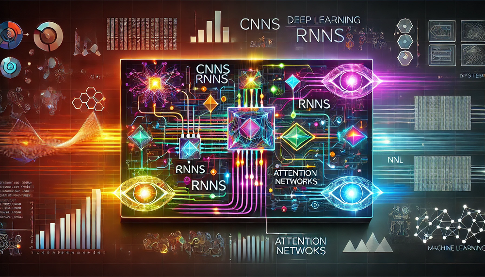

DNN Architectures
DALL·E 3 Prompt: A visually striking rectangular image illustrating the interplay between deep learning algorithms like CNNs, RNNs, and Attention Networks, interconnected with machine learning systems. The composition features neural network diagrams blending seamlessly with representations of computational systems such as processors, graphs, and data streams. Bright neon tones contrast against a dark futuristic background, symbolizing cutting-edge technology and intricate system complexity.

Purpose
Why do architectural choices in neural networks become critical system design decisions that determine computational feasibility, hardware requirements, and deployment constraints?
Neural network architectures represent fundamental engineering decisions that directly determine system performance, resource requirements, and deployment viability. Each architectural choice creates cascading effects throughout the entire system stack: memory bandwidth demands, computational complexity patterns, parallelization opportunities, and hardware acceleration compatibility. Understanding these architectural implications enables engineers to make informed trade-offs between model capability and system constraints, predict computational bottlenecks before they occur, and select appropriate hardware platforms for deployment. These architectural decisions ultimately determine whether a machine learning system can meet its performance requirements within available computational resources, making architectural understanding essential for building scalable, efficient AI systems.
- Map fundamental neural network concepts to deep learning architectures (dense, spatial, temporal, attention-based).
- Analyze how architectural patterns shape computational and memory demands.
- Evaluate system-level impacts of architectural choices on system attributes.
- Compare architectures’ hardware mapping and identify optimization strategies.
- Assess trade-offs between complexity and system needs for specific applications.
Overview
Building on the neural network foundations established in Chapter 3: Deep Learning Primer, this chapter examines how specialized architectures exploit problem structure to achieve computational efficiency. While the fundamental operations—matrix multiplications and nonlinear activations—remain constant, their organization within specialized architectures fundamentally transforms system engineering trade-offs.
Four architectural patterns address the diversity of pattern recognition challenges in deep learning. Each pattern responds to specific limitations of earlier approaches, establishing a systematic progression from general-purpose to increasingly specialized architectures. This evolution reveals both the computational principles underlying each design and their systematic relationships.
The architectural progression begins with Multi-Layer Perceptrons (MLPs), which apply the universal approximation principle through dense connectivity. While theoretically capable, MLPs treat all inputs uniformly, creating computational inefficiencies when data exhibits inherent structure. Convolutional Neural Networks (CNNs) emerged to exploit spatial locality, reducing computational requirements for image-like data through parameter sharing and local connectivity. Recurrent Neural Networks (RNNs) extended the architectural repertoire to sequential data by introducing memory states, enabling temporal pattern processing unattainable with feedforward architectures. Attention mechanisms and Transformers represent the current architectural frontier, replacing fixed structural constraints with dynamic, content-dependent processing. Given their dominance in modern ML systems—from large language models to vision transformers—attention-based architectures receive extensive treatment, examining both fundamental attention concepts and their culmination in the Transformer architecture that has revolutionized sequence modeling across domains.
This architectural evolution demonstrates a fundamental principle: each innovation addresses specific limitations of its predecessors while introducing new computational challenges, establishing a progression that balances representational generality against computational efficiency.
From a systems perspective, each architectural evolution reflects quantifiable trade-offs between computational complexity and pattern recognition capability. The computational demands vary dramatically across architectures: MLPs require maximum computational resources per input element but handle arbitrary relationships. CNNs reduce computation through structural assumptions about spatial locality, achieving 5-10x efficiency gains on typical image tasks. RNNs introduce sequential constraints that allow temporal processing but create dependencies that challenge parallel execution. Transformers eliminate sequential constraints but reintroduce computational complexity through attention mechanisms, typically requiring 2-3x more computation than CNNs for similar performance.
These trade-offs between computational efficiency and representational power drive the systematic architectural evolution we explore throughout this chapter. The detailed quantitative performance analysis, including specific FLOP counts, latency measurements, memory bandwidth utilization, and energy consumption characteristics for each architecture, is covered comprehensively in Chapter 9: AI Acceleration and Chapter 7: Benchmarking AI where hardware-specific optimization strategies are systematically addressed.
This chapter examines each architectural pattern through a unified analytical framework that reveals their systematic relationships:
- Pattern Processing Needs: What data characteristics and computational challenges drove each architectural innovation
- Algorithmic Structure: How the architecture addresses these needs through specific organizational principles
- Computational Mapping: The resulting demands on memory, computation, and data movement resources
- System Implications: How these computational patterns influence hardware design and system optimization
This systems-oriented analysis extends the neural network foundations from Chapter 3: Deep Learning Primer—forward propagation, backpropagation, and gradient descent—by examining how specialized architectures organize these fundamental operations to exploit problem structure. The architectural knowledge developed here provides essential context for understanding hardware acceleration strategies in Chapter 9: AI Acceleration and optimization techniques in Chapter 11: Model Optimizations. By understanding the evolutionary logic connecting these architectures, engineers can make systematic decisions about architectural selection, resource planning, and system design.
Multi-Layer Perceptrons: Dense Pattern Processing
Multi-Layer Perceptrons (MLPs) represent the most direct extension of neural networks into deep architectures. Unlike more specialized networks, MLPs process each input element with equal importance, making them versatile but computationally intensive. Their architecture, while simple, establishes core computational patterns that appear throughout deep learning models. Their computational power was established theoretically by the Universal Approximation Theorem (UAT)1 (Cybenko 1989; Hornik, Stinchcombe, and White 1989), which states that a sufficiently large MLP with non-linear activation functions2 can approximate any continuous function on a compact domain, given suitable weights and biases.
1 Universal Approximation Theorem: Proven independently by Cybenko (1989) and Hornik (1989), this result showed that neural networks could theoretically learn any function, a discovery that reinvigorated interest in neural networks after the “AI Winter” of the 1980s and established mathematical foundations for modern deep learning.
2 Activation Functions: Non-linear mathematical functions like ReLU, sigmoid, and tanh that introduce non-linearity into neural networks. Without them, multiple layers would collapse to a single linear transformation, making ReLU’s simple max(0,x) operation necessary for deep learning’s success since 2012.
In practice, the UAT explains why MLPs succeed across diverse tasks while revealing their limitations. The theorem guarantees that some MLP can approximate any function, yet provides no guidance on requisite network size or weight determination. Consequently, MLPs can theoretically solve any pattern recognition problem but may require impractically large networks or extensive computation. This theoretical power drives the selection of MLPs for tabular data, recommendation systems, and problems where input relationships are unknown, while the practical limitations motivated the development of specialized architectures such as CNNs for spatial data and RNNs for sequential data, each optimized for different computational patterns and system requirements.
When applied to the MNIST handwritten digit recognition challenge3, an MLP demonstrates its computational approach by transforming a \(28\times 28\) pixel image into digit classification.
3 MNIST Dataset: Created by Yann LeCun in 1998 from NIST’s database of handwritten digits, MNIST’s 60,000 training images became the “fruit fly” of machine learning research. Despite achieving 99.7% accuracy being considered solved, MNIST remains valuable for education because its simplicity allows students to focus on architectural concepts without data complexity distractions. By treating each of the 784 pixels as an equally weighted input, the network learns to decompose visual information through a systematic progression of layers, converting raw pixel intensities into increasingly abstract representations that capture the essential characteristics of handwritten digits.
Pattern Processing Needs
Deep learning models frequently encounter problems where any input feature may influence any output, absent inherent constraints on these relationships. Financial market analysis exemplifies this challenge: any economic indicator may affect any market outcome. Similarly, in natural language processing, the meaning of a word may depend on any other word in the sentence. These scenarios demand an architectural pattern capable of learning arbitrary relationships across all input features.
Dense pattern processing addresses these challenges through several key capabilities. First, it enables unrestricted feature interactions where each output can depend on any combination of inputs. Second, it supports learned feature importance, enabling the system to determine which connections matter rather than relying on prescribed relationships. Finally, it provides adaptive representation, enabling the network to reshape its internal representations based on the data.
The MNIST digit recognition task illustrates this uncertainty: while humans might focus on specific parts of digits (loops in ‘6’ or crossings in ‘8’), the pixel combinations critical for classification remain indeterminate. A ‘7’ written with a serif may share pixel patterns with a ‘2’, while variations in handwriting mean discriminative features may appear anywhere in the image. This uncertainty about feature relationships necessitates a dense processing approach where every pixel can potentially influence the classification decision.
This requirement for unrestricted connectivity leads directly to the mathematical foundation of MLPs.
Algorithmic Structure
MLPs enable unrestricted feature interactions through a direct algorithmic solution: comprehensive connectivity between all nodes. This connectivity requirement manifests through a series of fully-connected layers, where each neuron connects to every neuron in adjacent layers.
This architectural principle translates the dense connectivity pattern into matrix multiplication operations4, establishing the mathematical foundation that renders MLPs computationally tractable. As illustrated in Figure 1, each layer transforms its input through a fundamental operation combining linear transformation with nonlinear activation:
4 GEMM (General Matrix Multiply): The fundamental operation underlying neural networks, accounting for 80-95% of computation time in dense neural networks. GEMM performs C = αAB + βC and has been optimized for decades. Modern implementations like cuBLAS achieve 80-95% of theoretical peak performance on GPUs, making GEMM optimization important for ML systems.
\[ \mathbf{h}^{(l)} = f\big(\mathbf{W}^{(l)}\mathbf{h}^{(l-1)} + \mathbf{b}^{(l)}\big) \]
In this equation, \(\mathbf{h}^{(l)}\) represents the layer \(l\) output (activation vector), \(\mathbf{W}^{(l)}\) denotes the weight matrix for layer \(l\), \(\mathbf{b}^{(l)}\) denotes the bias vector, and \(f(\cdot)\) denotes the activation function (such as ReLU). The superscript \((l)\) indicates the layer number, with bold symbols representing vectors and matrices. This compact notation encapsulates the core operation of neural networks: linear transformation followed by nonlinear activation.
{kind=link}
The dimensions of these operations reveal the computational scale of dense pattern processing:
- Input vector: \(\mathbf{h}^{(0)} \in \mathbb{R}^{d_{\text{in}}}\) represents all potential input features
- Weight matrices: \(\mathbf{W}^{(l)} \in \mathbb{R}^{d_{\text{out}} \times d_{\text{in}}}\) capture all possible input-output relationships
- Output vector: \(\mathbf{h}^{(l)} \in \mathbb{R}^{d_{\text{out}}}\) produces transformed representations
The MNIST example demonstrates the practical scale of these operations:
- Each 784-dimensional input (\(28\times 28\) pixels) connects to every neuron in the first hidden layer
- A hidden layer with 100 neurons requires a \(784\times 100\) weight matrix
- Each weight in this matrix represents a learnable relationship between an input pixel and a hidden feature
This algorithmic structure addresses the need for arbitrary feature relationships while creating specific computational patterns that computer systems must accommodate.
Architectural Characteristics
This architectural approach exhibits both strengths and limitations. Dense connectivity provides the universal approximation capability established earlier but introduces computational redundancy. While this theoretical power enables MLPs to model any continuous function given sufficient width, this flexibility necessitates numerous parameters to learn relatively simple patterns. The dense connections ensure that every input feature influences every output, yielding maximum expressiveness at the cost of maximum computational expense.
These trade-offs motivate sophisticated optimization techniques that reduce computational demands while preserving model capability. Structured pruning can eliminate 80-90% of connections with minimal accuracy loss, while quantization reduces precision requirements from 32-bit to 8-bit or lower. These model compression strategies, along with hardware-specific optimizations that exploit the regular structure of dense matrix operations, are systematically addressed in Chapter 11: Model Optimizations and Chapter 9: AI Acceleration, building directly on the architectural foundations established here.
Computational Mapping
The mathematical representation of dense matrix multiplication maps to specific computational patterns that systems must handle. This mapping progresses from mathematical abstraction to computational reality, as demonstrated in the first implementation shown in Listing 1.
The function mlp_layer_matrix directly mirrors the mathematical equation, employing high-level matrix operations (matmul) to express the computation in a single line while abstracting the underlying complexity. This implementation style characterizes deep learning frameworks, where optimized libraries manage the actual computation.
def mlp_layer_matrix(X, W, b):
# X: input matrix (batch_size × num_inputs)
# W: weight matrix (num_inputs × num_outputs)
# b: bias vector (num_outputs)
H = activation(matmul(X, W) + b)
# One clean line of math
return HIn contrast, the second implementation, mlp_layer_compute (shown in Listing 2), exposes the actual computational pattern through nested loops. This version reveals what really happens when we compute a layer’s output: we process each sample in the batch, computing each output neuron by accumulating weighted contributions from all inputs.
def mlp_layer_compute(X, W, b):
# Process each sample in the batch
for batch in range(batch_size):
# Compute each output neuron
for out in range(num_outputs):
# Initialize with bias
Z[batch,out] = b[out]
# Accumulate weighted inputs
for in_ in range(num_inputs):
Z[batch,out] += X[batch,in_] * W[in_,out]
H = activation(Z)
return HThis translation from mathematical abstraction to concrete computation exposes how dense matrix multiplication decomposes into nested loops of simpler operations. The outer loop processes each sample in the batch, while the middle loop computes values for each output neuron. Within the innermost loop, the system performs repeated multiply-accumulate operations, combining each input with its corresponding weight.
In the MNIST example, each output neuron requires 784 multiply-accumulate operations and at least 1,568 memory accesses (784 for inputs, 784 for weights). While actual implementations use optimizations through libraries like BLAS5 or cuBLAS, these patterns drive key system design decisions. The hardware architectures that accelerate these matrix operations, including GPU tensor cores and specialized AI accelerators, are covered in Chapter 9: AI Acceleration.
5 Basic Linear Algebra Subprograms (BLAS): Developed in the 1970s as a standard for basic vector and matrix operations, BLAS became the foundation for virtually all scientific computing. Modern implementations like Intel MKL and OpenBLAS can achieve 80-95% of theoretical peak performance on well-optimized workloads, making them necessary for neural network efficiency.
System Implications
When analyzing how computational patterns impact computer systems, we examine three core dimensions: memory requirements, computation needs, and data movement. This framework enables systematic analysis of how algorithmic patterns influence system design decisions across all neural network architectures, revealing both commonalities and distinctive characteristics. These system-level considerations build directly on the foundational concepts of neural network computation patterns, memory systems, and system scaling discussed in Chapter 3: Deep Learning Primer.
Memory Requirements
For dense pattern processing, the memory requirements stem from storing and accessing weights, inputs, and intermediate results. In our MNIST example, connecting our 784-dimensional input layer to a hidden layer of 100 neurons requires 78,400 weight parameters. Each forward pass must access all these weights, along with input data and intermediate results. The all-to-all connectivity pattern means there’s no inherent locality in these accesses; every output needs every input and its corresponding weights.
These memory access patterns enable optimization through careful data organization and reuse. Modern processors handle these dense access patterns through specialized approaches: CPUs leverage their cache hierarchy for data reuse, while GPUs employ memory architectures designed for high-bandwidth access to large parameter matrices. Frameworks abstract these optimizations through high-performance matrix operations (as detailed in our earlier analysis).
Computation Needs
The core computation revolves around multiply-accumulate operations arranged in nested loops. Each output value requires as many multiply-accumulates as there are inputs. For MNIST, this requires 784 multiply-accumulates per output neuron. With 100 neurons in the hidden layer, 78,400 multiply-accumulates are performed for a single input image. While these operations are simple, their volume and arrangement create specific demands on processing resources.
This computational structure enables specific optimization strategies in modern hardware. The dense matrix multiplication pattern can be parallelized across multiple processing units, with each handling different subsets of neurons. Modern hardware accelerators take advantage of this through specialized matrix multiplication units, while software frameworks automatically convert these operations into optimized BLAS (Basic Linear Algebra Subprograms) calls. CPUs and GPUs can both exploit cache locality by carefully tiling the computation to maximize data reuse, though their specific approaches differ based on their architectural strengths.
Data Movement
The all-to-all connectivity pattern in MLPs creates significant data movement requirements. Each multiply-accumulate operation needs three pieces of data: an input value, a weight value, and the running sum. For our MNIST example layer, computing a single output value requires moving 784 inputs and 784 weights to wherever the computation occurs. This movement pattern repeats for each of the 100 output neurons, creating large data transfer demands between memory and compute units.
The predictable data movement patterns enable strategic data staging and transfer optimizations. Different architectures address this challenge through various mechanisms; CPUs use prefetching and multi-level caches, while GPUs employ high-bandwidth memory systems and latency hiding through massive threading. Software frameworks orchestrate these data movements through memory management systems that reduce redundant transfers and increase data reuse.
Convolutional Neural Networks: Spatial Pattern Processing
The computational intensity and parameter requirements of MLPs reveal a fundamental mismatch when applied to structured data. While the Universal Approximation Theorem guarantees that MLPs can learn any function, it provides no efficiency guidance. When processing images, MLPs must learn spatial relationships such as edge detection and texture recognition from scratch for every position in the image, leading to massive parameter counts and computational waste. This inefficiency motivated the development of architectural patterns that exploit inherent data structure.
Convolutional Neural Networks emerged as the solution to this challenge, introducing two key innovations that enhance efficiency for spatially structured data. Parameter sharing allows the same feature detector to be applied across different spatial positions, reducing parameters from millions to thousands while improving generalization. Local connectivity restricts connections to spatially adjacent regions, reflecting the biological insight that nearby pixels are more likely to be related than distant ones.
These architectural innovations represent a fundamental trade-off in deep learning design: sacrificing the theoretical generality of MLPs for practical efficiency gains when data exhibits known structure. While MLPs treat each input element independently, CNNs exploit spatial relationships to achieve computational savings and improved performance on vision tasks.
Pattern Processing Needs
Spatial pattern processing addresses scenarios where the relationship between data points depends on their relative positions or proximity. Consider processing a natural image: a pixel’s relationship with its neighbors is important for detecting edges, textures, and shapes. These local patterns then combine hierarchically to form more complex features: edges form shapes, shapes form objects, and objects form scenes.
This hierarchical spatial pattern processing appears across many domains. In computer vision, local pixel patterns form edges and textures that combine into recognizable objects. Speech processing relies on patterns across nearby time segments to identify phonemes and words. Sensor networks analyze correlations between physically proximate sensors to understand environmental patterns. Medical imaging depends on recognizing tissue patterns that indicate biological structures.
Focusing on image processing to illustrate these principles, if we want to detect a cat in an image, certain spatial patterns must be recognized: the triangular shape of ears, the round contours of the face, the texture of fur. Importantly, these patterns maintain their meaning regardless of where they appear in the image. A cat is still a cat whether it appears in the top-left or bottom-right corner. This indicates two key requirements for spatial pattern processing: the ability to detect local patterns and the ability to recognize these patterns regardless of their position6.
6 ImageNet Revolution: AlexNet’s dramatic victory in the 2012 ImageNet challenge (Krizhevsky, Sutskever, and Hinton 2017) (reducing error from 26% to 16%) sparked the deep learning renaissance. ImageNet’s 14 million labeled images across 20,000 categories provided the scale needed to train deep CNNs, proving that “big data + big compute + big models” could achieve superhuman performance.
{kind=link}
This leads us to the convolutional neural network architecture (CNN), pioneered by Yann LeCun7 and Y. LeCun et al. (1989). CNNs achieve this through several key innovations: parameter sharing8, local connectivity, and translation invariance9.
7 Yann LeCun and CNNs: LeCun’s 1989 LeNet architecture was inspired by Hubel and Wiesel’s discovery of simple and complex cells in cat visual cortex (Hubel and Wiesel 1962). LeNet-5 achieved 99.2% accuracy on MNIST in 1998 and was deployed by banks to read millions of checks daily, among the first large-scale commercial applications of neural networks. As illustrated in Figure 2, CNNs address spatial pattern processing through a different connection pattern than MLPs. Instead of connecting every input to every output, CNNs use a local connection pattern where each output connects only to a small, spatially contiguous region of the input. This local receptive field moves across the input space, applying the same set of weights at each position, a process known as convolution.
8 Parameter Sharing: CNNs reuse the same filter weights across spatial positions, reducing parameters substantially. A CNN processing 224×224 images might use 3×3 filters with only 9 parameters per channel, versus an equivalent MLP requiring 50,176 parameters per neuron, a 5,500x reduction enabling practical computer vision.
9 Translation Invariance: CNNs detect features regardless of spatial position. A cat’s ear is recognized whether in the top-left or bottom-right corner. This property emerges from convolution’s sliding window design and is important for computer vision, where objects appear at arbitrary locations in images.
Algorithmic Structure
The core operation in a CNN can be expressed mathematically as:
\[ \mathbf{H}^{(l)}_{i,j,k} = f\left(\sum_{di}\sum_{dj}\sum_{c} \mathbf{W}^{(l)}_{di,dj,c,k}\mathbf{H}^{(l-1)}_{i+di,j+dj,c} + \mathbf{b}^{(l)}_k\right) \]
This equation describes how CNNs process spatial data. \(\mathbf{H}^{(l)}_{i,j,k}\) is the output at spatial position \((i,j)\) in channel \(k\) of layer \(l\). The triple sum iterates over the filter dimensions: \((di,dj)\) scans the spatial filter size, and \(c\) covers input channels. \(\mathbf{W}^{(l)}_{di,dj,c,k}\) represents the filter weights, capturing local spatial patterns. Unlike MLPs that connect all inputs to outputs, CNNs only connect local spatial neighborhoods.
Breaking down the notation further, \((i,j)\) corresponds to spatial positions, \(k\) indexes output channels, \(c\) indexes input channels, and \((di,dj)\) spans the local receptive field10. Unlike the dense matrix multiplication of MLPs, this operation:
10 Receptive Field: The region of the input that influences a particular output neuron. In CNNs, receptive fields grow with depth. A neuron in layer 3 might “see” a 7×7 region even with 3×3 filters, due to stacking. Understanding receptive field size is important for ensuring networks can capture features at the right scale for the task.
- Processes local neighborhoods (typically \(3\times 3\) or \(5\times 5\))
- Reuses the same weights at each spatial position
- Maintains spatial structure in its output
To illustrate this process concretely, consider the MNIST digit classification task with \(28\times 28\) grayscale images. Each convolutional layer applies a set of filters (e.g., \(3\times 3\)) that slide across the image, computing local weighted sums. If we use 32 filters with padding to preserve dimensions, the layer produces a \(28\times 28\times 32\) output, where each spatial position contains 32 different feature measurements of its local neighborhood. This contrasts sharply with the Multi-Layer Perceptron (MLP) approach, where the entire image is flattened into a 784-dimensional vector before processing.
This algorithmic structure directly implements the requirements for spatial pattern processing, creating distinct computational patterns that influence system design. Unlike MLPs, convolutional networks preserve spatial locality, allowing for efficient hierarchical feature extraction. These properties drive architectural optimizations in AI accelerators, where operations such as data reuse, tiling, and parallel filter computation are important for performance.
The effectiveness of CNNs can be understood through the lens of group theory11, which provides a mathematical framework for understanding symmetries in data. Translation invariance emerges because convolution is equivariant with respect to the translation group—if we shift the input image, the output feature maps shift by the same amount. Mathematically, if \(T_v\) represents translation by vector \(v\), then a convolutional layer \(f\) satisfies: \(f(T_v x) = T_v f(x)\). This equivariance property allows CNNs to learn features that generalize across spatial locations.
11 Group Theory in Neural Networks: Mathematical framework describing how CNNs preserve spatial relationships. Translation equivariance means shifting an input image shifts the output feature maps by the same amount—a property enabling CNNs to recognize objects regardless of position, foundational to computer vision success.
12 Inductive Bias: Prior assumptions built into model architecture about the structure of data. CNNs assume spatial locality and translation invariance, drastically reducing the space of functions they can learn compared to MLPs. This constraint enables better generalization with fewer parameters—a key principle in machine learning architecture design.
13 Hypothesis Space: The set of all possible functions a model can represent given its architecture and parameters. MLPs have a larger hypothesis space than CNNs for images, but CNNs’ constrained space contains better solutions for visual tasks, demonstrating that architectural constraints often improve rather than limit performance. Recent work has extended these principles to other symmetry groups, developing Group-Equivariant CNNs that handle rotations and reflections (cohen2016group?).
The choice of convolution as the fundamental operation reflects deeper principles about inductive bias12 in neural architecture design. By restricting connectivity to local neighborhoods and sharing parameters across spatial positions, CNNs encode prior knowledge about the structure of visual data: that important features are local and translation-invariant. This architectural constraint reduces the hypothesis space13 that the network must search, enabling more efficient learning from limited data compared to fully connected networks.
CNNs naturally implement hierarchical representation learning through their layered structure. Early layers detect low-level features like edges and textures with small receptive fields, while deeper layers combine these into increasingly complex patterns with larger receptive fields. This hierarchical organization mirrors the structure of the visual cortex and enables CNNs to build compositional representations: complex objects are represented as compositions of simpler parts. The mathematical foundation for this emerges from the fact that stacking convolutional layers creates a tree-like dependency structure, where each deep neuron depends on an exponentially large set of input pixels, enabling efficient representation of hierarchical patterns.
Architectural Characteristics
Parameter sharing dramatically reduces complexity compared to MLPs by reusing the same filters across spatial locations. This sharing embodies the assumption that useful features (such as edges or textures) can appear anywhere in an image, making the same feature detector valuable across all spatial positions.
The architectural efficiency of CNNs enables further optimization through specialized techniques. Depthwise separable convolutions decompose standard convolutions into depthwise and pointwise operations, reducing computation by 8-9× for typical mobile deployments. Channel pruning eliminates entire feature maps based on importance metrics, achieving 40-50% FLOPs reduction with <1% accuracy loss. These optimization strategies, along with hardware mappings that exploit spatial locality and data reuse in convolution operations, are comprehensively analyzed in Chapter 11: Model Optimizations and Chapter 9: AI Acceleration.
As illustrated in Figure 3, convolution operations involve sliding a small filter over the input image to generate a feature map14. This process captures local structures while maintaining translation invariance. For an interactive visual exploration of convolutional networks, the CNN Explainer project provides an insightful demonstration of how these networks are constructed.
14 Feature Map: The output of applying a convolutional filter to an input, representing detected features at different spatial locations. A 64-filter layer produces 64 feature maps, each highlighting different patterns like edges, textures, or shapes. Feature maps become more abstract (detecting objects, faces) in deeper layers compared to early layers (detecting edges, colors).
{kind=link}
Computational Mapping
Convolution operations create computational patterns fundamentally different from MLP dense matrix multiplication. This translation from mathematical operations to implementation details reveals distinct computational characteristics.
The first implementation, conv_layer_spatial (shown in Listing 3), uses high-level convolution operations to express the computation concisely. This is typical in deep learning frameworks, where optimized libraries handle the underlying complexity.
def conv_layer_spatial(input, kernel, bias):
output = convolution(input, kernel) + bias
return activation(output)The second implementation, conv_layer_compute (see Listing 4), reveals the actual computational pattern: nested loops that process each spatial position, applying the same filter weights to local regions of the input. These nested loops reveal the true nature of convolution’s computational structure.
def conv_layer_compute(input, kernel, bias):
# Loop 1: Process each image in batch
for image in range(batch_size):
# Loop 2&3: Move across image spatially
for y in range(height):
for x in range(width):
# Loop 4: Compute each output feature
for out_channel in range(num_output_channels):
result = bias[out_channel]
# Loop 5&6: Move across kernel window
for ky in range(kernel_height):
for kx in range(kernel_width):
# Loop 7: Process each input feature
for in_channel in range(num_input_channels):
# Get input value from correct window position
in_y = y + ky
in_x = x + kx
# Perform multiply-accumulate operation
result += (
input[image, in_y, in_x, in_channel]
* kernel[ky, kx, in_channel, out_channel]
)
# Store result for this output position
output[image, y, x, out_channel] = resultThe seven nested loops reveal different aspects of the computation:
- Outer loops (1-3) manage position: which image and where in the image
- Middle loop (4) handles output features: computing different learned patterns
- Inner loops (5-7) perform the actual convolution: sliding the kernel window
Examining this process in detail, the outer two loops (for y and for x) traverse each spatial position in the output feature map (for the MNIST example, this traverses all \(28\times 28\) positions). At each position, values are computed for each output channel (for k loop), representing different learned features or patterns—the 32 different feature detectors.
The inner three loops implement the actual convolution operation at each position. For each output value, we process a local \(3\times 3\) region of the input (the dy and dx loops) across all input channels (for c loop). This creates a sliding window effect, where the same \(3\times 3\) filter moves across the image, performing multiply-accumulates between the filter weights and the local input values. Unlike the MLP’s global connectivity, this local processing pattern means each output value depends only on a small neighborhood of the input.
For our MNIST example with \(3\times 3\) filters and 32 output channels, each output position requires only 9 multiply-accumulate operations per input channel, compared to the 784 operations needed in our MLP layer. This operation must be repeated for every spatial position \((28\times 28)\) and every output channel (32).
While using fewer operations per output, the spatial structure creates different patterns of memory access and computation that systems must handle. These patterns influence system design, creating both challenges and opportunities for optimization.
System Implications
Applying our three-dimensional analysis framework to CNNs, the spatial nature of processing creates distinctive patterns in memory requirements, computation needs, and data movement that differ from MLP dense connectivity.
Memory Requirements
For convolutional layers, memory requirements center around two key components: filter weights and feature maps. Unlike MLPs that require storing full connection matrices, CNNs use small, reusable filters. In our MNIST example, a convolutional layer with 32 filters of size \(3\times 3\) requires storing only 288 weight parameters \((3\times 3\times 32)\), in contrast to the 78,400 weights needed for our MLP’s fully-connected layer. The system must store feature maps for all spatial positions, creating a different memory demand. A \(28\times 28\) input with 32 output channels requires storing 25,088 activation values \((28\times 28\times 32)\).
These memory access patterns suggest opportunities for optimization through weight reuse and careful feature map management. Processors optimize these spatial patterns by caching filter weights for reuse across positions while streaming feature map data. Frameworks implement spatial optimizations through specialized memory layouts that enable filter reuse and spatial locality in feature map access. CPUs and GPUs approach this differently. CPUs use their cache hierarchy to keep frequently used filters resident, while GPUs employ specialized memory architectures designed for the spatial access patterns of image processing. The detailed architecture design principles for these specialized processors are covered in Chapter 9: AI Acceleration.
Computation Needs
The core computation in CNNs involves repeatedly applying small filters across spatial positions. Each output value requires a local multiply-accumulate operation over the filter region. For our MNIST example with \(3\times 3\) filters and 32 output channels, computing one spatial position involves 288 multiply-accumulates \((3\times 3\times 32)\), and this must be repeated for all 784 spatial positions \((28\times 28)\). While each individual computation involves fewer operations than an MLP layer, the total computational load remains large due to spatial repetition.
This computational pattern presents different optimization opportunities than MLPs. The regular, repeated nature of convolution operations enables efficient hardware utilization through structured parallelism. Modern processors exploit this pattern in various ways. CPUs leverage SIMD instructions15 to process multiple filter positions simultaneously, while GPUs parallelize computation across spatial positions and channels. The model optimization techniques that further reduce these computational demands, including specialized convolution optimizations and sparsity patterns, are detailed in Chapter 11: Model Optimizations.
15 SIMD (Single Instruction, Multiple Data): CPU instructions that perform the same operation on multiple data elements simultaneously. Modern x86 processors support AVX-512, enabling 16 single-precision operations per instruction, a 16x speedup over scalar code. SIMD is important for efficient neural network inference on CPUs, especially for edge deployment. Deep learning frameworks further optimize this through specialized convolution algorithms that transform the computation to better match hardware capabilities.
Data Movement
The sliding window pattern of convolutions creates a distinctive data movement profile. Unlike MLPs where each weight is used once per forward pass, CNN filter weights are reused many times as the filter slides across spatial positions. For our MNIST example, each \(3\times 3\) filter weight is reused 784 times (once for each position in the \(28\times 28\) feature map). This creates a different challenge: the system must stream input features through the computation unit while keeping filter weights stable.
The predictable spatial access pattern enables strategic data movement optimizations. Different architectures handle this movement pattern through specialized mechanisms. CPUs maintain frequently used filter weights in cache while streaming through input features. GPUs employ memory architectures optimized for spatial locality and provide hardware support for efficient sliding window operations. Deep learning frameworks orchestrate these movements by organizing computations to maximize filter weight reuse and minimize redundant feature map accesses.
Recurrent Neural Networks: Sequential Pattern Processing
Convolutional Neural Networks achieved efficiency gains by exploiting spatial locality, yet their architectural assumptions fail when patterns depend on temporal order rather than spatial proximity. While CNNs excel at recognizing "what" is present in data through shared feature detectors, they cannot capture "when" events occur or how they relate across time. This limitation manifests in domains such as natural language processing, where word meaning depends on sentential context, and time-series analysis, where future values depend on historical patterns.
Sequential data presents a fundamental challenge: patterns can span arbitrary temporal distances, rendering fixed-size kernels ineffective. Unlike spatial convolution, where a 3×3 filter captures local relationships, temporal relationships may require connecting events separated by hundreds or thousands of time steps. Traditional feedforward architectures, including CNNs, process each input independently and cannot maintain the temporal context necessary for these long-range dependencies.
Recurrent Neural Networks address this architectural limitation by introducing memory as a fundamental component of the computational model. Rather than processing inputs in isolation, RNNs maintain an internal state that propagates information from previous time steps, enabling the network to condition its current output on historical context. This architecture embodies another trade-off: while CNNs sacrifice theoretical generality for spatial efficiency, RNNs introduce computational dependencies that challenge parallel execution in exchange for temporal processing capabilities.
This section provides focused coverage of RNNs, emphasizing their core contributions to sequential processing and the architectural principles that influenced modern attention mechanisms. While RNNs introduced critical concepts—memory states, temporal dependencies, and sequential computation—contemporary practice increasingly favors attention-based architectures for sequence modeling. We focus on foundational principles rather than extensive implementation variants, dedicating substantial depth to the attention mechanisms and Transformers (Section 1.5) that have largely superseded RNNs in production systems while building directly on the insights gained from recurrent architectures.
Pattern Processing Needs
Sequential pattern processing addresses scenarios where current input interpretation depends on preceding information. In natural language processing, word meaning often depends heavily on previous words in the sentence. Context determines interpretation, as evidenced by the varying meanings of words based on surrounding terms. Similarly, in speech recognition, phoneme interpretation depends on surrounding sounds, while financial forecasting requires understanding historical data patterns.
The fundamental challenge in sequential processing lies in maintaining and updating relevant context over time. Human text comprehension does not restart with each word; rather, a running understanding evolves as new information is processed. Similarly, time-series data processing encounters patterns spanning different timescales, from immediate dependencies to long-term trends. This necessitates an architecture capable of both maintaining state over time and updating it based on new inputs.
These requirements translate into specific architectural demands: the system must maintain internal state to capture temporal context, update this state based on new inputs, and learn which historical information is relevant for current predictions. Unlike MLPs and CNNs, which process fixed-size inputs, sequential processing must accommodate variable-length sequences while maintaining computational efficiency. These requirements culminate in the recurrent neural network (RNN) architecture.
Algorithmic Structure
RNNs address sequential processing through recurrent connections, distinguishing them from MLPs and CNNs. Rather than merely mapping inputs to outputs, RNNs maintain an internal state updated at each time step, creating a memory mechanism that propagates information forward in time. This temporal dependency modeling capability was first explored by Elman (1990), who demonstrated RNN capacity to identify structure in time-dependent data. Basic RNNs suffer from the vanishing gradient problem16, constraining their ability to learn long-term dependencies.
16 Vanishing Gradient Problem: During backpropagation through time, gradients shrink exponentially as they propagate backward through RNN layers. When recurrent weights have magnitude < 1, gradients multiply by values < 1 at each time step, vanishing after 5-10 steps and preventing learning of long-term dependencies—a key limitation solved by LSTMs and attention mechanisms.
The core operation in a basic RNN can be expressed mathematically as: \[ \mathbf{h}_t = f(\mathbf{W}_{hh}\mathbf{h}_{t-1} + \mathbf{W}_{xh}\mathbf{x}_t + \mathbf{b}_h) \] where \(\mathbf{h}_t\) denotes the hidden state at time \(t\), \(\mathbf{x}_t\) denotes the input at time \(t\), \(\mathbf{W}_{hh}\) contains the recurrent weights, and \(\mathbf{W}_{xh}\) contains the input weights, as illustrated in the unfolded network structure in Figure 4.
In word sequence processing, each word may be represented as a 100-dimensional vector (\(\mathbf{x}_t\)), with a hidden state of 128 dimensions (\(\mathbf{h}_t\)). At each time step, the network combines the current input with its previous state to update its sequential understanding, establishing a memory mechanism capable of capturing patterns across time steps.
This recurrent structure fulfills sequential processing requirements through connections that maintain internal state and propagate information forward in time. Rather than processing all inputs independently, RNNs process sequential data by iteratively updating a hidden state based on the current input and the previous hidden state, as depicted in Figure 4. This architecture suits tasks including language modeling, speech recognition, and time-series forecasting.
RNNs implement a recursive algorithm where each time step’s function call depends on the result of the previous call. Analogous to recursive functions that maintain state through the call stack, RNNs maintain state through their hidden vectors. The mathematical formula \(\mathbf{h}_t = f(\mathbf{h}_{t-1}, \mathbf{x}_t)\) directly parallels recursive function definitions where f(n) = g(f(n-1), input(n)). This correspondence explains RNN capacity to handle variable-length sequences: just as recursive algorithms process lists of arbitrary length by applying the same function recursively, RNNs process sequences of any length by applying the same recurrent computation.
Efficiency Characteristics and Optimization Potential
Sequential processing creates computational bottlenecks but enables unique efficiency characteristics for memory usage. RNNs achieve constant memory overhead for hidden state storage regardless of sequence length, making them extremely memory-efficient for long sequences. While Transformers require O(n²) memory for sequence length n, RNNs maintain fixed memory usage, enabling processing of sequences thousands of steps long on modest hardware.
Structured pruning of hidden-to-hidden connections can achieve 10x speedup while maintaining sequence modeling capability. The recurrent weight matrix \(W_{hh}\) typically dominates parameter count for large hidden states, but magnitude-based pruning reveals that 70-80% of these connections contribute minimally to temporal dependencies. Block-structured pruning maintains computational efficiency while enabling significant model compression.
Sequential operations accumulate quantization errors, requiring careful quantization point placement and gradient scaling for stable low-precision training. Unlike feedforward networks where quantization errors remain localized, RNN errors propagate through time, making INT8 quantization more challenging. Per-timestep quantization schemes and careful handling of hidden state precision are required for maintaining accuracy in quantized RNN deployments.
{kind=link}
Computational Mapping
RNN sequential processing creates computational patterns fundamentally different from both MLPs and CNNs. This implementation approach demonstrates how temporal dependencies translate into specific computational requirements.
As shown in Listing 5, the rnn_layer_step function demonstrates how the operation looks using high-level matrix operations found in deep learning frameworks. It handles a single time step, taking the current input x_t and previous hidden state h_prev, along with two weight matrices: W_hh for hidden-to-hidden connections and W_xh for input-to-hidden connections. Through matrix multiplication operations (matmul), it merges the previous state and current input to generate the next hidden state.
def rnn_layer_step(x_t, h_prev, W_hh, W_xh, b):
# x_t: input at time t (batch_size × input_dim)
# h_prev: previous hidden state (batch_size × hidden_dim)
# W_hh: recurrent weights (hidden_dim × hidden_dim)
# W_xh: input weights (input_dim × hidden_dim)
h_t = activation(
matmul(h_prev, W_hh)
+ matmul(x_t, W_xh)
+ b
)
return h_tThis simplified view masks the underlying complexity of the nested loops and individual computations shown in the detailed implementation (Listing 6). Its actual implementation reveals a more detailed computational reality.
def rnn_layer_compute(x_t, h_prev, W_hh, W_xh, b):
# Initialize next hidden state
h_t = np.zeros_like(h_prev)
# Loop 1: Process each sequence in the batch
for batch in range(batch_size):
# Loop 2: Compute recurrent contribution
# (h_prev × W_hh)
for i in range(hidden_dim):
for j in range(hidden_dim):
h_t[batch,i] += h_prev[batch,j] * W_hh[j,i]
# Loop 3: Compute input contribution (x_t × W_xh)
for i in range(hidden_dim):
for j in range(input_dim):
h_t[batch,i] += x_t[batch,j] * W_xh[j,i]
# Loop 4: Add bias and apply activation
for i in range(hidden_dim):
h_t[batch,i] = activation(h_t[batch,i] + b[i])
return h_tThe nested loops in rnn_layer_compute expose the core computational pattern of RNNs (see Listing 6). Loop 1 processes each sequence in the batch independently, allowing for batch-level parallelism. Within each batch item, Loop 2 computes how the previous hidden state influences the next state through the recurrent weights W_hh. Loop 3 then incorporates new information from the current input through the input weights W_xh. Finally, Loop 4 adds biases and applies the activation function to produce the new hidden state.
For a sequence processing task with input dimension 100 and hidden state dimension 128, each time step requires two matrix multiplications: one \(128\times 128\) for the recurrent connection and one \(100\times 128\) for the input projection. While individual time steps can process in parallel across batch elements, the time steps themselves must process sequentially. This creates a unique computational pattern that systems must handle.
System Implications
Following the analytical framework established for MLPs, RNNs exhibit distinctive patterns in memory requirements, computation needs, and data movement that differ significantly from both dense and spatial processing architectures.
Memory Requirements
RNNs require storing two sets of weights (input-to-hidden and hidden-to-hidden) along with the hidden state. For the example with input dimension 100 and hidden state dimension 128, this requires storing 12,800 weights for input projection \((100\times 128)\) and 16,384 weights for recurrent connections \((128\times 128)\). Unlike CNNs where weights are reused across spatial positions, RNN weights are reused across time steps. The system must maintain the hidden state, which constitutes a key factor in memory usage and access patterns.
These memory access patterns create a different profile from MLPs and CNNs. Processors optimize sequential patterns by maintaining weight matrices in cache while streaming through temporal elements. Frameworks optimize temporal processing by batching sequences and managing hidden state storage between time steps. CPUs and GPUs approach this through different strategies; CPUs leverage their cache hierarchy for weight reuse; meanwhile, GPUs use specialized memory architectures designed for maintaining state across sequential operations. The specialized hardware optimizations for sequential processing, including memory banking and pipeline architectures, are detailed in Chapter 9: AI Acceleration.
Computation Needs
The core computation in RNNs involves repeatedly applying weight matrices across time steps. For each time step, we perform two matrix multiplications: one with the input weights and one with the recurrent weights. In our example, processing a single time step requires 12,800 multiply-accumulates for the input projection \((100\times 128)\) and 16,384 multiply-accumulates for the recurrent connection \((128\times 128)\).
This computational pattern differs from both MLPs and CNNs in a key way: while we can parallelize across batch elements, we cannot parallelize across time steps due to the sequential dependency. Each time step must wait for the previous step’s hidden state before it can begin computation. This creates a tension between the inherent sequential nature of the algorithm and the desire for parallel execution in modern hardware.
Processors address sequential constraints through specialized approaches. CPUs pipeline operations within time steps while maintaining temporal ordering. GPUs batch multiple sequences together to maintain high throughput despite sequential dependencies. Software frameworks optimize this further by techniques like sequence packing and unrolling computations across multiple time steps when possible, enabling more efficient utilization of parallel processing resources while respecting the sequential constraints inherent in recurrent architectures.
Data Movement
The sequential processing in RNNs creates a distinctive data movement pattern that differs from both MLPs and CNNs. While MLPs need each weight only once per forward pass and CNNs reuse weights across spatial positions, RNNs reuse their weights across time steps while requiring careful management of the hidden state data flow.
For our example with a 128-dimensional hidden state, each time step must: load the previous hidden state (128 values), access both weight matrices (29,184 total weights from both input and recurrent connections), and store the new hidden state (128 values). This pattern repeats for every element in the sequence. Unlike CNNs where we can predict and prefetch data based on spatial patterns, RNN data movement is driven by temporal dependencies.
Different architectures handle this sequential data movement through specialized mechanisms. CPUs maintain weight matrices in cache while streaming through sequence elements and managing hidden state updates. GPUs employ memory architectures optimized for maintaining state information across sequential operations while processing multiple sequences in parallel. Deep learning frameworks orchestrate these movements by managing data transfers between time steps and optimizing batch operations.
While RNNs established foundational concepts for sequential processing, their architectural constraints—sequential dependencies preventing parallelization and fixed hidden states limiting long-range relationship modeling—motivated the development of attention mechanisms. The following section examines attention-based architectures in depth, including their culmination in Transformers, which have largely superseded RNNs in production systems through dynamic, content-dependent processing that eliminates sequential constraints. This extensive treatment reflects attention mechanisms’ dominance in modern ML systems and their fundamental reimagining of sequential pattern processing.
Attention Mechanisms: Dynamic Pattern Processing
Recurrent Neural Networks successfully introduced memory to handle sequential dependencies, but their fixed sequential processing creates fundamental limitations. RNNs process information in temporal order, making it difficult to capture relationships between distant elements and impossible to parallelize computation across sequence positions. More critically, RNNs assume that temporal proximity correlates with importance—that nearby words or time steps are more relevant than distant ones. This assumption breaks down in many real-world scenarios.
Consider the sentence "The cat, which was sitting by the window overlooking the garden, was sleeping." Here, "cat" and "sleeping" are separated by multiple intervening words, yet they form the core subject-predicate relationship. RNN architectures would process all the intervening elements sequentially, potentially losing this crucial connection in their fixed-capacity hidden state. This limitation revealed the need for architectures that could identify and weight relationships based on content rather than position.
Attention mechanisms emerged as the solution to this architectural constraint by introducing dynamic connectivity patterns that adapt based on input content. Rather than processing elements in predetermined order with fixed relationships, attention mechanisms compute the relevance between all pairs of elements and weight their interactions accordingly. This represents a fundamental shift from structural constraints to learned, data-dependent processing patterns.
Pattern Processing Needs
Dynamic pattern processing addresses scenarios where relationships between elements are not fixed by architecture but instead emerge from content. Language translation exemplifies this challenge: when translating “the bank by the river,” understanding “bank” requires attending to “river,” but in “the bank approved the loan,” the important relationship is with “approved” and “loan.” Unlike RNNs that process information sequentially or CNNs that use fixed spatial patterns, an architecture is required that can dynamically determine which relationships matter.
Expanding beyond language, this requirement for dynamic processing appears across many domains. In protein structure prediction, interactions between amino acids depend on their chemical properties and spatial arrangements. In graph analysis, node relationships vary based on graph structure and node features. In document analysis, connections between different sections depend on semantic content rather than just proximity.
Synthesizing these requirements, dynamic processing demands specific capabilities from our processing architecture. The system must compute relationships between all pairs of elements, weigh these relationships based on content, and use these weights to selectively combine information. Unlike previous architectures with fixed connectivity patterns, dynamic processing requires the flexibility to modify its computation graph based on the input itself. These capabilities naturally lead us to the Transformer architecture, which implements them through attention mechanisms. Figure 5 shows the relationships learned for an attention head between subwords in a sentence.
{kind=link}
Basic Attention Mechanism
Attention mechanisms represent a fundamental shift from fixed architectural connections to dynamic, content-based interactions between sequence elements. This section explores the mathematical foundations of attention, examining how query-key-value operations enable flexible pattern processing. We analyze the computational requirements, memory access patterns, and system implications that make attention both powerful and computationally demanding.
Algorithmic Structure
Attention mechanisms form the foundation of dynamic pattern processing by computing weighted connections between elements based on their content (Bahdanau, Cho, and Bengio 2014). This approach enables processing of relationships that are not fixed by architecture but instead emerge from the data itself. At the core of an attention mechanism lies a fundamental operation that can be expressed mathematically as:
\[ \text{Attention}(\mathbf{Q}, \mathbf{K}, \mathbf{V}) = \text{softmax} \left(\frac{\mathbf{Q}\mathbf{K}^T}{\sqrt{d_k}}\right)\mathbf{V} \]
This equation shows scaled dot-product attention. \(\mathbf{Q}\) (queries) and \(\mathbf{K}\) (keys) are matrix-multiplied to compute similarity scores, divided by \(\sqrt{d_k}\) (key dimension) for numerical stability, then normalized with softmax17 to get attention weights. These weights are applied to \(\mathbf{V}\) (values) to produce the output. The result is a weighted combination where each position receives information from all relevant positions based on content similarity.
17 Softmax Function: Converts a vector of real numbers into a probability distribution where all values sum to 1. Defined as \(\text{softmax}(x_i) = \frac{e^{x_i}}{\sum_j e^{x_j}}\), softmax amplifies differences between inputs (larger values get disproportionately higher probabilities) while ensuring valid attention weights for combining information sources.
18 Query-Key-Value Attention: Inspired by information retrieval systems where queries search through keys to retrieve values. In neural attention, queries and keys compute similarity scores (like a search engine matching queries to documents), while values contain the actual information to retrieve—a design that enables flexible, content-based information access.
In this equation, \(\mathbf{Q}\) (queries), \(\mathbf{K}\) (keys), and \(\mathbf{V}\) (values)18 represent learned projections of the input. For a sequence of length \(N\) with dimension \(d\), this operation creates an \(N\times N\) attention matrix, determining how each position should attend to all others.
The attention operation involves several key steps. First, it computes query, key, and value projections for each position in the sequence. Next, it generates an \(N\times N\) attention matrix through query-key interactions. These steps are illustrated in Figure 6. Finally, it uses these attention weights to combine value vectors, producing the output.
{kind=link}
The key is that, unlike the fixed weight matrices found in previous architectures, as shown in Figure 7, these attention weights are computed dynamically for each input. This allows the model to adapt its processing based on the dynamic content at hand.
{kind=link}
Computational Mapping
Attention mechanisms create computational patterns that differ significantly from previous architectures. The implementation approach shown in Listing 7 demonstrates how dynamic connectivity translates into specific computational requirements.
def attention_layer_matrix(Q, K, V):
# Q, K, V: (batch_size × seq_len × d_model)
scores = matmul(Q, K.transpose(-2, -1)) / \
sqrt(d_k) # Compute attention scores
weights = softmax(scores) # Normalize scores
output = matmul(weights, V) # Combine values
return output
# Core computational pattern
def attention_layer_compute(Q, K, V):
# Initialize outputs
scores = np.zeros((batch_size, seq_len, seq_len))
outputs = np.zeros_like(V)
# Loop 1: Process each sequence in batch
for b in range(batch_size):
# Loop 2: Compute attention for each query position
for i in range(seq_len):
# Loop 3: Compare with each key position
for j in range(seq_len):
# Compute attention score
for d in range(d_model):
scores[b,i,j] += Q[b,i,d] * K[b,j,d]
scores[b,i,j] /= sqrt(d_k)
# Apply softmax to scores
for i in range(seq_len):
scores[b,i] = softmax(scores[b,i])
# Loop 4: Combine values using attention weights
for i in range(seq_len):
for j in range(seq_len):
for d in range(d_model):
outputs[b, i, d] += (
scores[b, i, j]
* V[b, j, d]
)
return outputsThe nested loops in attention_layer_compute reveal the true nature of attention’s computational pattern (see Listing 7). The first loop processes each sequence in the batch independently. The second and third loops compute attention scores between all pairs of positions, creating a quadratic computation pattern with respect to sequence length. The fourth loop uses these attention weights to combine values from all positions, producing the final output.
System Implications
Applying our three-dimensional analysis framework to attention mechanisms reveals patterns in memory requirements, computation needs, and data movement that distinguish them from previous architectures through dynamic connectivity.
Memory Requirements
In terms of memory requirements, attention mechanisms necessitate storage for attention weights, key-query-value projections, and intermediate feature representations. For a sequence length \(N\) and dimension d, each attention layer must store an \(N\times N\) attention weight matrix for each sequence in the batch, three sets of projection matrices for queries, keys, and values (each sized \(d\times d\)), and input and output feature maps of size \(N\times d\). The dynamic generation of attention weights for every input creates a memory access pattern where intermediate attention weights become a significant factor in memory usage.
Computation Needs
Computation needs in attention mechanisms center around two main phases: generating attention weights and applying them to values. For each attention layer, the system performs substantial multiply-accumulate operations across multiple computational stages. The query-key interactions alone require \(N\times N\times d\) multiply-accumulates, with an equal number needed for applying attention weights to values. Additional computations are required for the projection matrices and softmax operations. This computational pattern differs from previous architectures due to its quadratic scaling with sequence length and the need to perform fresh computations for each input.
Data Movement
Data movement in attention mechanisms presents unique challenges. Each attention operation involves projecting and moving query, key, and value vectors for each position, storing and accessing the full attention weight matrix, and coordinating the movement of value vectors during the weighted combination phase. This creates a data movement pattern where intermediate attention weights become a major factor in system bandwidth requirements. Unlike the more predictable access patterns of CNNs or the sequential access of RNNs, attention operations require frequent movement of dynamically computed weights across the memory hierarchy.
These distinctive characteristics of attention mechanisms in terms of memory, computation, and data movement have significant implications for system design and optimization, setting the stage for the development of more advanced architectures like Transformers.
Transformers: The Attention-First Architecture
While attention mechanisms introduced the concept of dynamic pattern processing, they were initially applied as additions to existing architectures, particularly RNNs for sequence-to-sequence tasks. This hybrid approach still suffered from the fundamental limitations of recurrent architectures: sequential processing constraints that prevented efficient parallelization and difficulties with very long sequences. The breakthrough insight was recognizing that attention mechanisms alone could replace both convolutional and recurrent processing entirely.
Transformers, introduced in the landmark "Attention is All You Need" paper19 by Vaswani et al. (2017), represent the culmination of architectural evolution by eliminating all structural constraints in favor of pure content-dependent processing. Rather than adding attention to RNNs, Transformers built the entire architecture around attention mechanisms, introducing self-attention as the primary computational pattern. This architectural decision traded the parameter efficiency of CNNs and the sequential coherence of RNNs for maximum flexibility and parallelizability.
19 “Attention is All You Need”: This 2017 paper by Google researchers eliminated recurrence entirely, showing that attention mechanisms alone could achieve state-of-the-art results. The title itself became a rallying cry, and within 5 years, transformer-based models achieved breakthrough performance in language (GPT, BERT), vision (ViT), and beyond. While the basic attention mechanism allows for content-based weighting of information from a source sequence, Transformers extend this idea by applying attention within a single sequence, enabling each element to attend to all other elements including itself.
This represents the final step in our architectural journey: from MLPs that connected everything to everything, to CNNs that connected locally, to RNNs that connected sequentially, to Transformers that connect dynamically based on learned content relationships. Each evolution sacrificed constraints for capabilities, with Transformers achieving maximum expressivity at the cost of maximum computational requirements.
Algorithmic Structure
The key innovation in Transformers lies in their use of self-attention layers. In a self-attention layer, the queries, keys, and values are all derived from the same input sequence. This allows the model to weigh the importance of different positions within the same sequence when encoding each position. For instance, in processing the sentence “The animal didn’t cross the street because it was too wide,” self-attention allows the model to link “it” with “street,” capturing long-range dependencies that are challenging for traditional sequential models.
The self-attention mechanism can be expressed mathematically in a form similar to the basic attention mechanism: \[ \text{SelfAttention}(\mathbf{X}) = \text{softmax} \left(\frac{\mathbf{XW_Q}(\mathbf{XW_K})^T}{\sqrt{d_k}}\right)\mathbf{XW_V} \]
Here, \(\mathbf{X}\) is the input sequence, and \(\mathbf{W_Q}\), \(\mathbf{W_K}\), and \(\mathbf{W_V}\) are learned weight matrices for queries, keys, and values respectively. This formulation highlights how self-attention derives all its components from the same input, creating a dynamic, content-dependent processing pattern.
Building on this foundation, Transformers employ multi-head attention, which extends the self-attention mechanism by running multiple attention functions in parallel. Each “head” involves a separate set of query/key/value projections that can focus on different aspects of the input, allowing the model to jointly attend to information from different representation subspaces. This multi-head structure provides the model with a richer representational capability, enabling it to capture various types of relationships within the data simultaneously.
The mathematical formulation for multi-head attention is: \[ \text{MultiHead}(\mathbf{Q}, \mathbf{K}, \mathbf{V}) = \text{Concat}(\text{head}_1, \ldots, \text{head}_h)\mathbf{W}^O \] where each attention head is computed as: \[ \text{head}_i = \text{Attention}(\mathbf{Q}\mathbf{W}_i^Q, \mathbf{K}\mathbf{W}_i^K, \mathbf{V}\mathbf{W}_i^V) \]
A critical component in both self-attention and multi-head attention is the scaling factor \(\sqrt{d_k}\), which serves an important mathematical purpose. This factor prevents the dot products from growing too large, which would push the softmax function into regions with extremely small gradients. For queries and keys of dimension \(d_k\), their dot product has variance \(d_k\), so dividing by \(\sqrt{d_k}\) normalizes the variance to 1, maintaining stable gradients and enabling effective learning.20
20 Attention Scaling: Without the \(\sqrt{d_k}\) scaling factor, large dot products would cause the softmax to saturate, producing gradients close to zero and hindering learning. This mathematical insight enables stable optimization of large Transformer models.
Beyond the mathematical mechanics, attention mechanisms can be understood conceptually as implementing a form of content-addressable memory system. Like hash tables that retrieve values based on key matching, attention computes similarity between a query and all available keys, then retrieves a weighted combination of corresponding values. The dot product similarity Q·K functions like a hash function that measures how well each key matches the query. The softmax normalization ensures the weights sum to 1, implementing a probabilistic retrieval mechanism. This connection helps explain why attention is so effective for tasks requiring flexible information retrieval—it provides a differentiable approximation to database lookup operations.
From an information-theoretic perspective, attention mechanisms implement optimal information aggregation under uncertainty. The attention weights can be viewed as representing uncertainty about which parts of the input contain relevant information for the current processing step. The softmax operation implements a maximum entropy principle: among all possible ways to distribute attention across input positions, softmax selects the distribution with maximum entropy subject to the constraint that similarity scores determine relative importance (Cover and Thomas 2006).
Efficiency Characteristics and Optimization Potential
Attention mechanisms are highly redundant, with many heads learning similar patterns. Head pruning and low-rank attention factorization can reduce computation by 50-80% with careful implementation. Analysis of large Transformer models reveals that most attention heads can be classified into a few common patterns (positional, syntactic, semantic), suggesting that explicit architectural specialization could replace learned redundancy.
Attention operations are particularly sensitive to quantization due to the softmax operation and the quadratic number of attention scores. Separate quantization schemes for Q, K, V projections and careful handling of softmax operations are required for stable quantization. Post-training INT8 quantization typically achieves 2-3% accuracy loss, while INT4 quantization requires more sophisticated quantization-aware training approaches.
The quadratic scaling with sequence length creates fundamental efficiency limitations. Sparse attention patterns (such as local windows, strided patterns, or learned sparsity) can reduce complexity from O(n²) to O(n log n) or O(n) while maintaining most modeling capability. Linear attention approximations trade some expressive power for linear scaling, enabling processing of much longer sequences on limited hardware.
This information-theoretic interpretation reveals why attention is so effective for selective processing. The mechanism automatically balances two competing objectives: focusing on the most relevant information (minimizing entropy) while maintaining sufficient breadth to avoid missing important details (maximizing entropy). The attention pattern emerges as the optimal trade-off between these objectives, explaining why transformers can effectively handle long sequences and complex dependencies.
Self-attention can be understood as learning dynamic activation patterns across the input sequence. Unlike CNNs which apply fixed filters or RNNs which use fixed recurrence patterns, attention learns which elements should activate together based on their content. This creates a form of adaptive connectivity where the effective network topology changes for each input. Recent research has shown that attention heads in trained models often specialize in detecting specific linguistic or semantic patterns (Clark et al. 2019), suggesting that the mechanism naturally discovers interpretable structural regularities in data.
The Transformer architecture leverages this self-attention mechanism within a broader structure that typically includes feed-forward layers, layer normalization, and residual connections (see Figure 8). This combination allows Transformers to process input sequences in parallel, capturing complex dependencies without the need for sequential computation. As a result, Transformers have demonstrated significant effectiveness across a wide range of tasks, from natural language processing to computer vision, transforming deep learning architectures across domains.
{kind=link}
Computational Mapping
While Transformer self-attention builds upon the basic attention mechanism, it introduces distinct computational patterns that set it apart. To understand these patterns, we must examine the typical implementation of self-attention in Transformers (see Listing 8):
def self_attention_layer(X, W_Q, W_K, W_V, d_k):
# X: input tensor (batch_size × seq_len × d_model)
# W_Q, W_K, W_V: weight matrices (d_model × d_k)
Q = matmul(X, W_Q)
K = matmul(X, W_K)
V = matmul(X, W_V)
scores = matmul(Q, K.transpose(-2, -1)) / sqrt(d_k)
attention_weights = softmax(scores, dim=-1)
output = matmul(attention_weights, V)
return output
def multi_head_attention(
X, W_Q, W_K, W_V, W_O, num_heads, d_k
):
outputs = []
for i in range(num_heads):
head_output = self_attention_layer(
X, W_Q[i], W_K[i], W_V[i], d_k
)
outputs.append(head_output)
concat_output = torch.cat(outputs, dim=-1)
final_output = matmul(concat_output, W_O)
return final_outputSystem Implications
This implementation reveals key computational characteristics that apply to basic attention mechanisms, with Transformer self-attention representing a specific case. First, self-attention enables parallel processing across all positions in the sequence. This is evident in the matrix multiplications that compute Q, K, and V simultaneously for all positions. Unlike recurrent architectures that process inputs sequentially, this parallel nature allows for more efficient computation, especially on modern hardware designed for parallel operations.
Second, the attention score computation results in a matrix of size (seq_len × seq_len), leading to quadratic complexity with respect to sequence length. This quadratic relationship becomes a significant computational bottleneck when processing long sequences, a challenge that has spurred research into more efficient attention mechanisms.
Third, the multi-head attention mechanism effectively runs multiple self-attention operations in parallel, each with its own set of learned projections. While this increases the computational load linearly with the number of heads, it allows the model to capture different types of relationships within the same input, enhancing the model’s representational power.
Fourth, the core computations in self-attention are dominated by large matrix multiplications. For a sequence of length \(N\) and embedding dimension \(d\), the main operations involve matrices of sizes \((N\times d)\), \((d\times d)\), and \((N\times N)\). These intensive matrix operations are well-suited for acceleration on specialized hardware like GPUs, but they also contribute significantly to the overall computational cost of the model.
Finally, self-attention generates memory-intensive intermediate results. The attention weights matrix \((N\times N)\) and the intermediate results for each attention head create substantial memory requirements, especially for long sequences. This can pose challenges for deployment on memory-constrained devices and necessitates careful memory management in implementations.
These computational patterns create a unique profile for Transformer self-attention, distinct from previous architectures. The parallel nature of the computations makes Transformers well-suited for modern parallel processing hardware, but the quadratic complexity with sequence length poses challenges for processing long sequences. As a result, much research has focused on developing optimization techniques, such as sparse attention patterns or low-rank approximations, to address these challenges. Each of these optimizations presents its own trade-offs between computational efficiency and model expressiveness, a balance that must be carefully considered in practical applications.
Architectural Building Blocks
Having examined four major architectural families—MLPs, CNNs, RNNs, and Transformers—each with distinct computational characteristics and system implications, a unifying perspective emerges. Deep learning architectures, while presented as distinct approaches in previous sections, are better understood as compositions of building blocks that evolved over time. Analogous to complex LEGO structures built from basic bricks, modern neural networks combine and iterate on core computational patterns that emerged through decades of research (Yann LeCun, Bengio, and Hinton 2015). Each architectural innovation introduced new building blocks while discovering novel applications of existing ones.
These building blocks and their evolution illuminate modern architectural design. The simple perceptron (Rosenblatt 1958) evolved into multi-layer networks (Rumelhart, Hinton, and Williams 1986), which subsequently spawned specialized patterns for spatial and sequential processing. Each advancement preserved useful elements from predecessors while introducing new computational primitives. Contemporary architectures, such as Transformers, represent carefully engineered combinations of these building blocks.
This progression reveals both the evolution of neural networks and the discovery and refinement of core computational patterns that remain relevant. The exploration of different neural network architectures demonstrates deep learning’s significant evolution, with each new architecture introducing distinct computational demands and system-level challenges.
Table 1 summarizes this evolution, highlighting the key primitives and system focus for each era of deep learning development. This table captures the major shifts in deep learning architecture design and corresponding changes in system-level considerations. The progression spans from early dense matrix operations optimized for CPUs, through convolutions leveraging GPU acceleration and sequential operations necessitating sophisticated memory hierarchies, to the current era of attention mechanisms requiring flexible accelerators and high-bandwidth memory.
| Era | Dominant Architecture | Key Primitives | System Focus |
|---|---|---|---|
| Early NN | MLP | Dense Matrix Ops | CPU optimization |
| CNN Revolution | CNN | Convolutions | GPU acceleration |
| Sequence Modeling | RNN | Sequential Ops | Memory hierarchies |
| Attention Era | Transformer | Attention, Dynamic Compute | Flexible accelerators, High-bandwidth memory |
Examination of these building blocks reveals how primitives evolved and combined to create increasingly powerful neural network architectures.
From Perceptron to Multi-Layer Networks
While we examined MLPs earlier as a mechanism for dense pattern processing, here we focus on how they established building blocks that appear throughout deep learning. The evolution from perceptron to MLP introduced several key concepts: the power of layer stacking, the importance of non-linear transformations, and the basic feedforward computation pattern.
The introduction of hidden layers between input and output created a template for feature transformation that appears in virtually every modern architecture. Even in sophisticated networks like Transformers, we find MLP-style feedforward layers performing feature processing. The concept of transforming data through successive non-linear layers has become a paradigm that transcends specific architecture types.
Most significantly, the development of MLPs established the backpropagation algorithm21, which to this day remains the cornerstone of neural network optimization. This key contribution has enabled the development of deep architectures and influenced how later architectures would be designed to maintain gradient flow.
21 Backpropagation Algorithm: While the chain rule was known since the 1600s, Rumelhart, Hinton, and Williams (1986) showed how to efficiently apply it to train multi-layer networks. This “learning by error propagation” algorithm made deep networks practical and remains virtually unchanged in modern systems—a testament to its importance.
These building blocks, layered feature transformation, non-linear activation, and gradient-based learning, set the foundation for more specialized architectures. Subsequent innovations often focused on structuring these basic components in new ways rather than replacing them entirely.
From Dense to Spatial Processing
The development of CNNs marked an architectural innovation, specifically the realization that we could specialize the dense connectivity of MLPs for spatial patterns. While retaining the core concept of layer-wise processing, CNNs introduced several building blocks that would influence all future architectures.
The first key innovation was the concept of parameter sharing. Unlike MLPs where each connection had its own weight, CNNs showed how the same parameters could be reused across different parts of the input. This not only made the networks more efficient but introduced the powerful idea that architectural structure could encode useful priors about the data (Lecun et al. 1998).
22 ResNet Revolution: ResNet (2016) solved the “degradation problem” where deeper networks performed worse than shallow ones. The key insight: adding identity shortcuts (\(\mathcal{F}(\mathbf{x}) + \mathbf{x}\)) let networks learn residual mappings instead of full transformations, enabling training of 1000+ layer networks and winning ImageNet 2015.
Perhaps even more influential was the introduction of skip connections through ResNets22 (He et al. 2016). Originally they were designed to help train very deep CNNs, skip connections have become a building block that appears in virtually every modern architecture. They showed how direct paths through the network could help gradient flow and information propagation, a concept now central to Transformer designs.
CNNs also introduced batch normalization, a technique for stabilizing neural network optimization by normalizing intermediate features (Ioffe and Szegedy 2015). This concept of feature normalization, while originating in CNNs, evolved into layer normalization and is now a key component in modern architectures.
These innovations, such as parameter sharing, skip connections, and normalization, transcended their origins in spatial processing to become essential building blocks in the deep learning toolkit.
The Evolution of Sequence Processing
While CNNs specialized MLPs for spatial patterns, sequence models adapted neural networks for temporal dependencies. RNNs introduced the concept of maintaining and updating state, a building block that influenced how networks could process sequential information, (Elman 1990).
23 LSTM Origins: Sepp Hochreiter and Jürgen Schmidhuber invented LSTMs in 1997 to solve the “vanishing gradient problem” that plagued RNNs. Their gating mechanism was inspired by biological neurons’ ability to selectively retain information—a breakthrough that enabled sequence modeling and facilitated modern language models.
24 Gated Recurrent Unit (GRU): Simplified version of LSTM introduced by Cho et al. (2014) with only 2 gates instead of 3, reducing parameters by ~25% while maintaining similar performance. GRUs became popular for their computational efficiency and easier training, proving that architectural simplification can sometimes improve rather than hurt performance.
The development of LSTMs23 and GRUs24 brought sophisticated gating mechanisms to neural networks (Hochreiter and Schmidhuber 1997; Cho et al. 2014). These gates, themselves small MLPs, showed how simple feedforward computations could be composed to control information flow. This concept of using neural networks to modulate other neural networks became a recurring pattern in architecture design.
Perhaps most significantly, sequence models demonstrated the power of adaptive computation paths. Unlike the fixed patterns of MLPs and CNNs, RNNs showed how networks could process variable-length inputs by reusing weights over time. This insight, that architectural patterns could adapt to input structure, laid groundwork for more flexible architectures.
Sequence models also popularized the concept of attention through encoder-decoder architectures (Bahdanau, Cho, and Bengio 2014). Initially introduced as an improvement to machine translation, attention mechanisms showed how networks could learn to dynamically focus on relevant information. This building block would later become the foundation of Transformer architectures.
Modern Architectures: Synthesis and Innovation
Modern architectures, particularly Transformers, represent a sophisticated synthesis of these fundamental building blocks. Rather than introducing entirely new patterns, they innovate through strategic combination and refinement of existing components. The Transformer architecture exemplifies this approach: at its core, MLP-style feedforward networks process features between attention layers. The attention mechanism itself builds on sequence model concepts while eliminating recurrent connections, instead employing position embeddings inspired by CNN intuitions. The architecture extensively utilizes skip connections (see Figure 9), inherited from ResNets, while layer normalization, evolved from CNN batch normalization, stabilizes optimization (Ba, Kiros, and Hinton 2016).
{kind=link}
This composition of building blocks creates emergent capabilities exceeding the sum of individual components. The self-attention mechanism, while building on previous attention concepts, enables novel forms of dynamic pattern processing. The arrangement of these components—attention followed by feedforward layers, with skip connections and normalization—has proven sufficiently effective to become a template for new architectures.
Recent innovations in vision and language models follow this pattern of recombining building blocks. Vision Transformers25 adapt the Transformer architecture to images while maintaining its essential components (Dosovitskiy et al. 2021). Large language models scale up these patterns while introducing refinements like grouped-query attention or sliding window attention, yet still rely on the core building blocks established through this architectural evolution (Brown et al. 2020). These modern architectural innovations demonstrate the principles of efficient scaling covered in Chapter 10: Efficient AI, while their practical implementation challenges and optimizations are explored in Chapter 11: Model Optimizations.
25 Vision Transformers (ViTs): Google’s 2021 breakthrough showed that pure transformers could match CNN performance on ImageNet by treating image patches as “words.” ViTs split a \(224\times 224\) image into \(16\times 16\) patches (196 “tokens”), proving that attention mechanisms could replace convolutional inductive biases with sufficient data.
The following comparison of primitive utilization across different neural network architectures illustrates how modern architectures synthesize and innovate upon previous approaches:
| Primitive Type | MLP | CNN | RNN | Transformer |
|---|---|---|---|---|
| Computational | Matrix Multiplication | Convolution (Matrix Mult.) | Matrix Mult. + State Update | Matrix Mult. + Attention |
| Memory Access | Sequential | Strided | Sequential + Random | Random (Attention) |
| Data Movement | Broadcast | Sliding Window | Sequential | Broadcast + Gather |
As shown in Table 2, Transformers combine elements from previous architectures while introducing new patterns. They retain the core matrix multiplication operations common to all architectures but introduce a more complex memory access pattern with their attention mechanism. Their data movement patterns blend the broadcast operations of MLPs with the gather operations reminiscent of more dynamic architectures.
This synthesis of primitives in Transformers shows how modern architectures innovate by recombining and refining existing building blocks, rather than inventing entirely new computational paradigms. This evolutionary process provides insight into the development of future architectures and helps guide the design of efficient systems to support them.
System-Level Building Blocks
Examination of different deep learning architectures enables distillation of their system requirements into primitives that underpin both hardware and software implementations. These primitives represent operations that cannot be decomposed further while maintaining their essential characteristics. Just as complex molecules are built from basic atoms, sophisticated neural networks are constructed from these operations.
Core Computational Primitives
Three operations serve as the building blocks for all deep learning computations: matrix multiplication, sliding window operations, and dynamic computation. These operations are primitive because they cannot be further decomposed without losing their essential computational properties and efficiency characteristics.
Matrix multiplication represents the basic form of transforming sets of features. When we multiply a matrix of inputs by a matrix of weights, we’re computing weighted combinations, which is the core operation of neural networks. For example, in our MNIST network, each 784-dimensional input vector multiplies with a \(784\times 100\) weight matrix. This pattern appears everywhere: MLPs use it directly for layer computations, CNNs reshape convolutions into matrix multiplications (turning a \(3\times 3\) convolution into a matrix operation, as illustrated in Figure 10), and Transformers use it extensively in their attention mechanisms.
Computational Building Blocks
Modern neural networks operate through three fundamental computational patterns that appear across all architectures. Understanding these patterns provides insight into how different architectures achieve their computational goals and why certain hardware optimizations are effective.
The detailed analysis of sparse computation patterns, including structured and unstructured sparsity, hardware-aware optimization strategies, and algorithm-hardware co-design principles, is covered systematically in Chapter 11: Model Optimizations and Chapter 9: AI Acceleration.
{kind=link}
im2col technique, enables efficient computation using optimized BLAS libraries and allows for parallel processing on standard hardware. This transformation is crucial for accelerating cnns and forms the basis for implementing convolutions on diverse platforms.
The im2col26 (image to column) technique, developed by Intel in the 1990s, accomplishes matrix reshaping by unfolding overlapping image patches into columns of a matrix, as illustrated in Figure 10. Each sliding window position in the convolution becomes a column in the transformed matrix, while the filter kernels are arranged as rows. This allows the convolution operation to be expressed as a standard GEMM (General Matrix Multiply) operation. The transformation trades memory consumption—duplicating data where windows overlap—for computational efficiency, enabling CNNs to leverage decades of BLAS optimizations and achieving 5-10x speedups on CPUs. In modern systems, these matrix multiplications map to specific hardware and software implementations. Hardware accelerators provide specialized tensor cores that can perform thousands of multiply-accumulates in parallel; NVIDIA’s A100 tensor cores can achieve up to 312 TFLOPS (32-bit) through massive parallelization of these operations. Software frameworks like PyTorch and TensorFlow automatically map these high-level operations to optimized matrix libraries (NVIDIA cuBLAS, Intel MKL) that exploit these hardware capabilities.
26 im2col (Image to Column): A data layout transformation developed by Intel in the 1990s that converts convolution operations into matrix multiplications by unfolding image patches into columns. This approach trades memory consumption (through data duplication) for computational efficiency, enabling CNNs to leverage decades of GEMM optimizations and achieving 5-10x speedups on CPUs.
27 Systolic Array: A network of processing elements that rhythmically compute and pass data through neighbors, like a “heartbeat” of computation. Invented by H.T. Kung and Charles Leiserson in 1978, systolic arrays achieve high throughput by overlapping computation with data movement—Google’s TPU systolic arrays perform 65,536 multiply-accumulate operations per clock cycle. Software frameworks optimize these operations by transforming them into efficient matrix multiplications (a \(3\times 3\) convolution becomes a \(9\times N\) matrix multiplication) and carefully managing data layout in memory to maximize spatial locality.
Sliding window operations compute local relationships by applying the same operation to chunks of data. In CNNs processing MNIST images, a \(3\times 3\) convolution filter slides across the \(28\times 28\) input, requiring \(26\times 26\) windows of computation, assuming a stride size of 1. Modern hardware accelerators implement this through specialized memory access patterns and data buffering schemes that optimize data reuse. For example, Google’s TPU uses a \(128\times 128\) systolic array27 where data flows systematically through processing elements, allowing each input value to be reused across multiple computations without accessing memory.
Dynamic computation, where the operation itself depends on the input data, emerged prominently with attention mechanisms but represents a fundamental capability needed for adaptive processing. In Transformer attention, each query dynamically determines its interaction weights with all keys; for a sequence of length 512, 512 different weight patterns must be computed on the fly. Unlike fixed patterns where the computation graph is known in advance, dynamic computation requires runtime decisions. This creates specific implementation challenges: hardware must provide flexible data routing (modern GPUs employ dynamic scheduling) and support variable computation patterns, while software frameworks require efficient mechanisms for handling data-dependent execution paths (PyTorch’s dynamic computation graphs, TensorFlow’s dynamic control flow).
These primitives combine in sophisticated ways in modern architectures. A Transformer layer processing a sequence of 512 tokens demonstrates this clearly: it uses matrix multiplications for feature projections (\(512\times 512\) operations implemented through tensor cores), may employ sliding windows for efficient attention over long sequences (using specialized memory access patterns for local regions), and requires dynamic computation for attention weights (computing \(512\times 512\) attention patterns at runtime). The way these primitives interact creates specific demands on system design, ranging from memory hierarchy organization to computation scheduling.
The building blocks we’ve discussed help explain why certain hardware features exist (like tensor cores for matrix multiplication) and why software frameworks organize computations in particular ways (like batching similar operations together). As we move from computational primitives to consider memory access and data movement patterns, recognizing how these operations shape the demands placed on memory systems becomes essential and data transfer mechanisms. The way computational primitives are implemented and combined has direct implications for how data needs to be stored, accessed, and moved within the system.
Memory Access Primitives
The efficiency of deep learning models depends heavily on memory access and management. Memory access often constitutes the primary bottleneck in modern ML systems; even though a matrix multiplication unit may be capable of performing thousands of operations per cycle, it will remain idle if data is not available at the requisite time. For example, accessing data from DRAM typically requires hundreds of cycles, while on-chip computation requires only a few cycles.
Three memory access patterns dominate in deep learning architectures: sequential access, strided access, and random access. Each pattern creates different demands on the memory system and offers different opportunities for optimization.
Sequential access is the simplest and most efficient pattern. Consider an MLP performing matrix multiplication with a batch of MNIST images: it needs to access both the \(784\times 100\) weight matrix and the input vectors sequentially. This pattern maps well to modern memory systems; DRAM can operate in burst mode for sequential reads (achieving up to 400 GB/s in modern GPUs), and hardware prefetchers can effectively predict and fetch upcoming data. Software frameworks optimize for this by ensuring data is laid out contiguously in memory and aligning data to cache line boundaries.
Strided access appears prominently in CNNs, where each output position needs to access a window of input values at regular intervals. For a CNN processing MNIST images with \(3\times 3\) filters, each output position requires accessing 9 input values with a stride matching the input width. While less efficient than sequential access, hardware supports this through pattern-aware caching strategies and specialized memory controllers. Software frameworks often transform these strided patterns into sequential access through data layout reorganization, where the im2col transformation in deep learning frameworks converts convolution’s strided access into efficient matrix multiplications.
Random access poses the greatest challenge for system efficiency. In a Transformer processing a sequence of 512 tokens, each attention operation potentially needs to access any position in the sequence, creating unpredictable memory access patterns. Random access can severely impact performance through cache misses (potentially causing 100+ cycle stalls per access) and unpredictable memory latencies. Systems address this through large cache hierarchies (modern GPUs have several MB of L2 cache) and sophisticated prefetching strategies, while software frameworks employ techniques like attention pattern pruning to reduce random access requirements.
These different memory access patterns contribute to the overall memory requirements of each architecture. To illustrate this, Table 3 compares the memory complexity of MLPs, CNNs, RNNs, and Transformers.
| Architecture | Input Dependency | Parameter Storage | Activation Storage | Scaling Behavior |
|---|---|---|---|---|
| MLP | Linear | \(O(N \times W)\) | \(O(B \times W)\) | Predictable |
| CNN | Constant | \(O(K \times C)\) | \(O(B\times H_{\text{img}}\) \(\times W_{\text{img}})\) | Efficient |
| RNN | Linear | \(O(h^2)\) | \(O(B \times T \times h)\) | Challenging |
| Transformer | Quadratic | \(O(N \times d)\) | \(O(B \times N^2)\) | Problematic |
Where:
- \(N\): Input or sequence size
- \(W\): Layer width
- \(B\): Batch size
- \(K\): Kernel size
- \(C\): Number of channels
- \(H_{\text{img}}\): Height of input feature map (CNN)
- \(W_{\text{img}}\): Width of input feature map (CNN)
- \(h\): Hidden state size (RNN)
- \(T\): Sequence length
- \(d\): Model dimensionality
Table 3 reveals how memory requirements scale with different architectural choices. The quadratic scaling of activation storage in Transformers, for instance, highlights the need for large memory capacities and efficient memory management in systems designed for Transformer-based workloads. In contrast, CNNs exhibit more favorable memory scaling due to their parameter sharing and localized processing. These memory access patterns complement the computational scaling behaviors examined later in Table 6, providing a complete picture of each architecture’s resource requirements. These memory complexity considerations are crucial when making system-level design decisions, such as choosing memory hierarchy configurations and developing memory optimization strategies.
The impact of these patterns becomes clear when we consider data reuse opportunities. In CNNs, each input pixel participates in multiple convolution windows (typically 9 times for a \(3\times 3\) filter), making effective data reuse necessary for performance. Modern GPUs provide multi-level cache hierarchies (L1, L2, shared memory) to capture this reuse, while software techniques like loop tiling ensure data remains in cache once loaded.
Working set size, the amount of data needed simultaneously for computation, varies dramatically across architectures. An MLP layer processing MNIST images might need only a few hundred KB (weights plus activations), while a Transformer processing long sequences can require several MB just for storing attention patterns. These differences directly influence hardware design choices, like the balance between compute units and on-chip memory, and software optimizations like activation checkpointing or attention approximation techniques.
Understanding these memory access patterns is essential as architectures evolve. The shift from CNNs to Transformers, for instance, has driven the development of hardware with larger on-chip memories and more sophisticated caching strategies to handle increased working sets and more dynamic access patterns. Future architectures will likely continue to be shaped by their memory access characteristics as much as their computational requirements.
Data Movement Primitives
While computational and memory access patterns define what operations occur where, data movement primitives characterize how information flows through the system. These patterns are key because data movement often consumes more time and energy than computation itself, as moving data from off-chip memory typically requires 100-1000$ imes$ more energy than performing a floating-point operation.
Four data movement patterns are prevalent in deep learning architectures: broadcast, scatter, gather, and reduction. Figure 11 illustrates these patterns and their relationships. Broadcast operations send the same data to multiple destinations simultaneously. In matrix multiplication with batch size 32, each weight must be broadcast to process different inputs in parallel. Modern hardware supports this through specialized interconnects, NVIDIA GPUs provide hardware multicast capabilities, achieving up to 600 GB/s broadcast bandwidth, while TPUs use dedicated broadcast buses. Software frameworks optimize broadcasts by restructuring computations (like matrix tiling) to maximize data reuse.
{kind=link}
Scatter operations distribute different elements to different destinations. When parallelizing a \(512\times 512\) matrix multiplication across GPU cores, each core receives a subset of the computation. This parallelization is important for performance but challenging, as memory conflicts and load imbalance, can reduce efficiency by 50% or more. Hardware provides flexible interconnects (like NVIDIA’s NVLink offering 600 GB/s bi-directional bandwidth), while software frameworks employ sophisticated work distribution algorithms to maintain high utilization.
Gather operations collect data from multiple sources. In Transformer attention with sequence length 512, each query must gather information from 512 different key-value pairs. These irregular access patterns are challenging, random gathering can be \(10\times\) slower than sequential access. Hardware supports this through high-bandwidth interconnects and large caches, while software frameworks employ techniques like attention pattern pruning to reduce gathering overhead.
Reduction operations combine multiple values into a single result through operations like summation. When computing attention scores in Transformers or layer outputs in MLPs, efficient reduction is essential. Hardware implements tree-structured reduction networks (reducing latency from \(O(n)\) to \(O(\log n)\)), while software frameworks use optimized parallel reduction algorithms that can achieve near-theoretical peak performance.
These patterns combine in sophisticated ways. A Transformer attention operation with sequence length 512 and batch size 32 involves:
- Broadcasting query vectors (\(512\times 64\) elements)
- Gathering relevant keys and values (\(512\times 512\times 64\) elements)
- Reducing attention scores (\(512\times 512\) elements per sequence)
The evolution from CNNs to Transformers has increased reliance on gather and reduction operations, driving hardware innovations like more flexible interconnects and larger on-chip memories. As models grow (some now exceeding 100 billion parameters28), efficient data movement becomes increasingly critical, leading to innovations like near-memory processing and sophisticated data flow optimizations.
28 Parameter Scaling: The leap from AlexNet’s 60 million parameters (2012) to GPT-3’s 175 billion parameters (2020) represents a 3,000x increase in just 8 years. Modern models like GPT-4 may exceed 1 trillion parameters, requiring specialized distributed computing infrastructure and consuming megawatts of power during training.
System Design Impact
The computational, memory access, and data movement primitives we’ve explored form the foundational requirements that shape the design of systems for deep learning. The way these primitives influence hardware design, create common bottlenecks, and drive trade-offs is important for developing efficient and effective ML systems.
One of the most significant impacts of these primitives on system design is the push towards specialized hardware. The prevalence of matrix multiplications and convolutions in deep learning has led to the development of tensor processing units (TPUs)29 and tensor cores in GPUs, which are specifically designed to perform these operations efficiently.
29 Tensor Processing Units: Google’s TPUs emerged from their need to run neural networks on billions of searches daily. First deployed secretly in 2015, TPUs achieve 15-30x better performance per watt than GPUs for inference. The TPU’s \(128\times 128\) systolic array performs 65,536 multiply-accumulate operations per clock cycle, revolutionizing AI hardware design. These specialized units can perform many multiply-accumulate operations in parallel, dramatically accelerating the core computations of neural networks.
30 High Bandwidth Memory (HBM): Stacked DRAM technology providing 1+ TB/s bandwidth compared to 500 GB/s for traditional GDDR6, developed by AMD and Hynix. HBM enables the massive data movement required by modern AI workloads—GPT-3 training requires moving 1.75 TB of parameters through memory during each forward pass.
31 Scratchpad Memory: Programmer-controlled on-chip memory providing predictable, fast access without cache management overhead. Unlike caches, scratchpads require explicit data movement but enable precise control over memory allocation—critical for neural network accelerators where memory access patterns are known and performance must be deterministic.
Memory systems have also been profoundly influenced by the demands of deep learning primitives. The need to support both sequential and random access patterns efficiently has driven the development of sophisticated memory hierarchies. High-bandwidth memory (HBM)30 has become common in AI accelerators to support the massive data movement requirements, especially for operations like attention mechanisms in Transformers. On-chip memory hierarchies have grown in complexity, with multiple levels of caching and scratchpad memories31 to support the diverse working set sizes of different neural network layers.
The data movement primitives have particularly influenced the design of interconnects and on-chip networks. The need to support efficient broadcasts, gathers, and reductions has led to the development of more flexible and higher-bandwidth interconnects. Some AI chips now feature specialized networks-on-chip designed to accelerate common data movement patterns in neural networks.
Table 4 summarizes the system implications of these primitives:
| Primitive | Hardware Impact | Software Optimization | Key Challenges |
|---|---|---|---|
| Matrix Multiplication | Tensor Cores | Batching, GEMM libraries | Parallelization, precision |
| Sliding Window | Specialized datapaths | Data layout optimization | Stride handling |
| Dynamic Computation | Flexible routing | Dynamic graph execution | Load balancing |
| Sequential Access | Burst mode DRAM | Contiguous allocation | Access latency |
| Random Access | Large caches | Memory-aware scheduling | Cache misses |
| Broadcast | Specialized interconnects | Operation fusion | Bandwidth |
| Gather/Scatter | High-bandwidth memory | Work distribution | Load balancing |
Despite these advancements, several bottlenecks persist in deep learning models. Memory bandwidth often remains a key limitation, particularly for models with large working sets or those that require frequent random access. The energy cost of data movement, especially between off-chip memory and processing units, continues to be a significant concern. For large-scale models, the communication overhead in distributed training can become a bottleneck, limiting scaling efficiency.
Energy Consumption Analysis Across Architectures
Energy consumption patterns vary dramatically across neural network architectures, with implications for both datacenter deployment and edge computing scenarios. Each architectural pattern exhibits distinct energy characteristics that inform deployment decisions and optimization strategies.
Dense matrix operations in MLPs achieve excellent arithmetic intensity32 (computation per data movement) but consume substantial absolute energy. Each multiply-accumulate operation consumes approximately 4.6pJ, while data movement from DRAM costs 640pJ per 32-bit value. For typical MLP inference, 70-80% of energy goes to data movement rather than computation, making memory bandwidth optimization critical for energy efficiency.
32 Arithmetic Intensity: The ratio of floating-point operations to memory accesses, measured in FLOPS per byte. High arithmetic intensity (>10 FLOPS/byte) enables efficient hardware utilization, while low intensity (<1 FLOPS/byte) makes workloads memory-bound. Attention mechanisms typically have low arithmetic intensity, explaining their energy inefficiency.
Convolutional operations reduce energy consumption through data reuse but exhibit variable efficiency depending on implementation. Im2col-based convolution implementations trade memory for simplicity, often doubling memory requirements and energy consumption. Direct convolution implementations achieve 3-5x better energy efficiency by eliminating redundant data movement, particularly for larger kernel sizes.
Sequential processing in RNNs creates energy efficiency opportunities through temporal data reuse. The constant memory footprint of RNN hidden states enables aggressive caching strategies, reducing DRAM access energy by 80-90% for long sequences. The sequential dependencies limit parallelization opportunities, often resulting in suboptimal hardware utilization and higher energy per operation.
Attention mechanisms in Transformers exhibit the highest energy consumption per operation due to quadratic scaling and complex data movement patterns. Self-attention operations consume 2-3x more energy per FLOP than standard matrix multiplication due to irregular memory access patterns and the need to store attention matrices. This energy cost scales quadratically with sequence length, making long-sequence processing energy-prohibitive without architectural modifications.
System designers must navigate trade-offs in supporting different primitives, each with unique characteristics that influence system design and performance. For example, optimizing for the dense matrix operations common in MLPs and CNNs might come at the cost of flexibility needed for the more dynamic computations in attention mechanisms. Supporting large working sets for Transformers might require sacrificing energy efficiency.
Balancing these trade-offs requires consideration of the target workloads and deployment scenarios. Understanding the nature of each primitive guides the development of both hardware and software optimizations in ML systems, allowing designers to make informed decisions about system architecture and resource allocation.
The comprehensive analysis of architectural patterns, computational primitives, and system implications throughout this chapter establishes the foundation for addressing a practical challenge: how do engineers systematically choose the right architecture for their specific problem? The diversity of neural network architectures, each optimized for different data patterns and computational constraints, requires a structured approach to architecture selection. This selection process must consider not only algorithmic performance but also deployment constraints covered in Chapter 2: ML Systems and operational efficiency requirements detailed in Chapter 12: ML Operations.
Architecture Selection Framework
The exploration of neural network architectures, from dense MLPs to dynamic Transformers, demonstrates how each design embodies specific assumptions about data structure and computational patterns. MLPs assume arbitrary feature relationships, CNNs exploit spatial locality, RNNs capture temporal dependencies, and Transformers model complex relational patterns. For practitioners facing real-world problems, a fundamental question emerges: how to systematically select the appropriate architecture for a specific use case?
The diversity of available architectures can be overwhelming, particularly when each claims superiority for different scenarios. Successful architecture selection depends less on following trends and more on understanding principles: matching data characteristics to architectural strengths, evaluating computational constraints against system capabilities, and balancing accuracy requirements with deployment realities.
This systematic approach to architecture selection draws upon the computational patterns and system implications we have explored throughout this chapter. By understanding how different architectures process information and their corresponding resource requirements, engineers can make informed decisions that align with both problem requirements and practical constraints. The framework integrates principles from efficient AI design Chapter 10: Efficient AI with practical deployment considerations as discussed in ML operations Chapter 12: ML Operations.
Data-to-Architecture Mapping
The first step in systematic architecture selection involves understanding how different data types align with architectural strengths. Each neural network architecture evolved to address specific patterns in data: MLPs handle arbitrary relationships in tabular data, CNNs exploit spatial locality in images, RNNs capture temporal dependencies in sequences, and Transformers model complex relational patterns where any element might influence any other.
This alignment is not coincidental—it reflects fundamental computational trade-offs. Architectures that match data characteristics can leverage natural structure for efficiency, while mismatched architectures must work against their design assumptions, leading to poor performance or excessive resource consumption.
Table 5 provides a systematic framework for matching data characteristics to appropriate architectures:
| Architecture | Data Type | Key Characteristics | Example Applications |
|---|---|---|---|
| MLPs | Tabular/Structured | • No spatial/temporal • Arbitrary relationships • Dense connectivity | • Financial modeling • Medical measurements • Recommendation systems |
| CNNs | Spatial/Grid-like | • Local patterns • Translation equivariance • Parameter sharing | • Image recognition • 2D sensor data • Signal processing |
| RNNs | Sequential/Temporal | • Temporal dependencies • Variable length • Memory across time | • Time series forecasting • Simple language tasks • Speech recognition |
| Transformers | Complex Relational | • Long-range dependencies • Attention mechanisms • Dynamic relationships | • Language understanding • Machine translation • Complex reasoning tasks |
While data characteristics guide initial architecture selection, computational constraints often determine final feasibility. Understanding the scaling behavior of each architecture enables realistic resource planning and deployment decisions.
Computational Complexity Considerations
Architecture selection must account for computational and memory trade-offs that fundamentally determine deployment feasibility. Each architecture exhibits distinct scaling behaviors that create different bottlenecks as problem size increases. Understanding these patterns enables realistic resource planning and prevents costly architectural mismatches during deployment.
The computational profile of each architecture reflects its underlying design philosophy. Dense architectures like MLPs prioritize representational capacity through full connectivity, while structured architectures like CNNs achieve efficiency through parameter sharing and locality assumptions. Sequential architectures like RNNs trade parallelization for memory efficiency, while attention-based architectures like Transformers exchange memory for computational flexibility. For completeness, we examine these same architectures from both computational scaling and memory access perspectives (see Table 3), as each viewpoint reveals different optimization opportunities and system design considerations.
Table 6 summarizes the key computational characteristics of each architecture:
| Architecture | Parameters | Forward Pass | Memory | Parallelization |
|---|---|---|---|---|
| MLPs | \(O(d_{\text{in}}\times\) \(d_{\text{out}})\) per layer | \(O(d_{\text{in}}\times\) \(d_{\text{out}})\) per layer | \(O(d^2)\) weights \(O(d\times b)\) activations | Excellent Matrix ops parallel |
| CNNs | \(O(k^2\times\) \(c_{\text{in}}\times\) \(c_{\text{out}})\) per layer | \(O(H\times W\times\) \(k^2\times\) \(c_{\text{in}}\times\) \(c_{\text{out}})\) | \(O(H\times W\times c)\) features \(O(k^2\times c^2)\) weights | Good Spatial independence |
| RNNs | \(O(h^2+h\times d)\) total | \(O(T\times h^2)\) for \(T\) time steps | \(O(h)\) hidden state (constant) | Poor Sequential deps |
| Transformers | \(O(d^2)\) projections \(O(d^2\times h)\) multi-head | \(O(n^2\times d+n\) \(\times d²)\) per layer | \(O(n^2)\) attention \(O(n\times d)\) sequences | Excellent (positions) Limited by memory |
Scalability and Production Considerations
Production deployment introduces constraints beyond algorithmic performance, including latency requirements, memory limitations, energy budgets, and fault tolerance needs. Each architecture exhibits distinct production characteristics that determine real-world feasibility.
MLPs and CNNs scale well across multiple devices through data parallelism, achieving near-linear speedups with proper batch size scaling. RNNs face fundamental parallelization challenges due to sequential dependencies, requiring pipeline parallelism or other specialized techniques. Transformers achieve excellent parallelization across sequence positions but suffer from quadratic memory scaling that limits batch sizes and effective utilization.
MLPs provide predictable latency proportional to layer size, making them suitable for real-time applications with strict SLA requirements. CNNs exhibit variable latency depending on implementation strategy and hardware capabilities, with optimized implementations achieving sub-millisecond inference. RNNs create latency dependencies on sequence length, making them challenging for interactive applications. Transformers provide excellent throughput for batch processing but struggle with single-inference latency due to attention overhead.
Memory requirements vary significantly across architectures in production environments. MLPs require fixed memory proportional to model size, enabling straightforward capacity planning. CNNs need variable memory for feature maps that scales with input resolution, requiring dynamic memory management for variable-size inputs. RNNs maintain constant memory for hidden states but may require unbounded memory for very long sequences. Transformers face quadratic memory growth that creates hard limits on sequence length in production.
Fault tolerance and recovery characteristics differ substantially between architectures. MLPs and CNNs exhibit stateless computation that enables straightforward checkpointing and recovery. RNNs maintain temporal state that complicates distributed training and failure recovery procedures. Transformers combine stateless computation with massive memory requirements, making checkpoint sizes a practical concern for large models.
Hardware mapping efficiency varies considerably across architectural patterns. Modern MLPs achieve 80-90% of peak hardware performance on specialized tensor units. CNNs reach 60-75% efficiency depending on layer configuration and memory hierarchy design. RNNs typically achieve 30-50% of peak performance due to sequential constraints and irregular memory access patterns. Transformers achieve 70-85% efficiency for large batch sizes but drop significantly for small batches due to attention overhead.
Hardware Mapping and Optimization Strategies
Different architectural patterns require distinct optimization strategies for efficient hardware mapping. Understanding these patterns enables systematic performance tuning and hardware selection decisions.
Dense matrix operations in MLPs map naturally to tensor processing units and GPU tensor cores. These operations benefit from several key optimizations: matrix tiling to fit cache hierarchies, mixed-precision computation to double throughput, and operation fusion to reduce memory traffic. Optimal tile sizes depend on cache hierarchy, typically 64x64 for L1 cache and 256x256 for L2, while tensor cores achieve peak efficiency with specific dimension multiples such as 16x16 blocks for Volta architecture.
CNNs benefit from specialized convolution algorithms and data layout optimizations that differ significantly from dense matrix operations. Im2col transformations convert convolutions to matrix multiplication but double memory usage. Winograd algorithms reduce arithmetic complexity by 2.25x for 3x3 convolutions at the cost of numerical stability. Direct convolution with custom kernels achieves optimal memory efficiency but requires architecture-specific tuning.
RNNs require fundamentally different optimization approaches due to their temporal dependencies. Loop unrolling reduces control overhead but increases memory usage. State vectorization enables SIMD operations across multiple sequences. Wavefront parallelization exploits independence across timesteps for bidirectional processing.
Transformers demand specialized attention optimizations due to their quadratic complexity. FlashAttention algorithms reduce memory usage from O(n²) to O(n) through online softmax computation and gradient recomputation. Sparse attention patterns including local, strided, and random approaches maintain modeling capability while reducing complexity. Multi-query attention shares key and value projections across heads, reducing memory bandwidth by 30-50%.
Multi-Layer Perceptrons represent the most straightforward computational pattern, with costs dominated by matrix multiplications. The dense connectivity that enables MLPs to model arbitrary relationships comes at the price of quadratic parameter growth with layer width. Each neuron connects to every neuron in the previous layer, creating substantial parameter counts that grow quadratically with network width. The computation is dominated by matrix-vector products, which are highly optimized on modern hardware. Matrix operations are inherently parallel and map efficiently to GPU architectures, with each output neuron computed independently. The optimization techniques for reducing these parameter counts, including pruning and low-rank approximations specifically targeting dense layers, are covered in Chapter 11: Model Optimizations.
Convolutional Neural Networks achieve computational efficiency through parameter sharing and spatial locality, but their costs scale with both spatial dimensions and channel depth. The convolution operation’s computational intensity depends heavily on kernel size and feature map resolution. Parameter sharing across spatial locations dramatically reduces memory compared to equivalent MLPs, while computational cost grows linearly with image resolution and quadratically with kernel size. Feature map memory dominates usage and can become prohibitive for high-resolution inputs. Spatial independence enables parallel processing across different spatial locations and channels, though memory bandwidth often becomes the limiting factor.
Recurrent Neural Networks optimize for memory efficiency at the cost of parallelization. Their sequential nature creates computational bottlenecks but enables processing of variable-length sequences with constant memory overhead. The hidden-to-hidden connections (\(h^2\) term) dominate parameter count for large hidden states. Sequential dependencies prevent parallel processing across time, making RNNs inherently slower than feedforward alternatives. Their constant memory usage for hidden state storage makes RNNs memory-efficient for long sequences, with this efficiency coming at the cost of computational speed.
Transformers achieve maximum flexibility through attention mechanisms but pay a steep price in memory usage. Their quadratic scaling with sequence length creates fundamental limits on the sequences they can process. Parameter count scales with model dimension but remains independent of sequence length. The \(n^2\) term from attention computation dominates for long sequences, while the \(n \times d^2\) term from feed-forward layers dominates for short sequences. Attention matrices create the primary memory bottleneck, as each attention head must store pairwise similarities between all sequence positions, leading to prohibitive memory usage for long sequences. While parallelization is excellent across sequence positions and attention heads, the quadratic memory requirement often forces smaller batch sizes, limiting effective parallelization.
These complexity patterns create distinct optimal domains for each architecture. MLPs excel when parameter efficiency is not critical, CNNs dominate for moderate-resolution spatial data, RNNs remain viable for very long sequences where memory is constrained, and Transformers excel for complex relational tasks where their computational cost can be justified by superior performance.
Decision Framework
Effective architecture selection requires balancing multiple competing factors: data characteristics, computational resources, performance requirements, and deployment constraints. While data patterns provide initial guidance and complexity analysis establishes feasibility bounds, final architectural choices often involve nuanced trade-offs demanding systematic evaluation.
{kind=link}
Figure 12 provides a structured approach to architecture selection decisions, ensuring comprehensive consideration of all relevant factors while avoiding common pitfalls such as selection based on novelty or perceived sophistication. The decision flowchart guides systematic architecture selection by first matching data characteristics to architectural strengths, then validating against practical constraints. The process is inherently iterative—resource limitations or performance gaps often necessitate reconsidering earlier choices.
This framework applies systematically through four key steps. First, data analysis: pattern types in data provide the strongest initial signal. Spatial data naturally aligns with CNNs, sequential data with RNNs. Second, progressive constraint validation: each constraint check (memory, computational budget, inference speed) acts as a filter. Failing any constraint necessitates either scaling down the current architecture or considering a fundamentally different approach.
Third, iterative trade-off handling when accuracy targets remain unmet. Additional model capacity may be required, necessitating a return to constraint checking. If deployment hardware cannot support the chosen architecture, reconsidering the entire architectural approach may be necessary. Fourth, anticipate multiple iterations, as real projects typically cycle through this framework several times before achieving optimal balance between data fit, computational feasibility, and deployment requirements.
This systematic approach prevents architecture selection based solely on novelty or perceived sophistication, ensuring alignment of choices with both problem requirements and system capabilities.
Fallacies and Pitfalls
Neural network architectures represent specialized computational structures designed for different data types and problem domains, which creates common misconceptions about their selection and deployment. The rich variety of architectural patterns—from dense networks to transformers—often leads engineers to make choices based on novelty or perceived sophistication rather than task-specific requirements and computational constraints.
Fallacy: More complex architectures always perform better than simpler ones.
This misconception prompts teams to immediately adopt transformer-based models or elaborate architectures without understanding their requirements. While sophisticated architectures such as transformers excel at complex tasks requiring long-range dependencies, they consume significantly more computational resources and memory. For numerous problems, particularly those with limited data or clear structural patterns, simpler architectures such as MLPs or CNNs achieve comparable accuracy with substantially less computational overhead. Architecture selection should correspond to problem complexity rather than defaulting to the most advanced option.
Pitfall: Ignoring the computational implications of architectural choices during model selection.
Many practitioners select architectures based solely on accuracy metrics from academic papers without considering computational requirements. A CNN’s spatial locality assumptions might deliver excellent accuracy for image tasks but require specialized memory access patterns. Similarly, RNNs’ sequential dependencies create serialization bottlenecks that limit parallelization opportunities. This oversight leads to deployment failures when models cannot meet latency requirements or exceed memory constraints in production environments.
Fallacy: Architecture performance is independent of hardware characteristics.
This belief assumes that all architectures perform equally well across different hardware platforms. In reality, different architectures exploit different hardware features: CNNs benefit from specialized tensor cores, MLPs leverage high-bandwidth memory, and RNNs require efficient sequential processing capabilities. A model that achieves optimal performance on GPUs might perform poorly on mobile devices or embedded processors. Understanding hardware-architecture alignment is crucial for effective deployment strategies.
Pitfall: Mixing architectural patterns without understanding their interaction effects.
Combining different architectural components (such as adding attention layers to CNNs or using skip connections in RNNs) can create unexpected computational bottlenecks. Each architectural pattern exhibits distinct memory access patterns and computational characteristics. Naive combinations may eliminate the performance benefits of individual components or create memory bandwidth conflicts. Successful hybrid architectures require careful analysis of how different patterns interact at the system level.
Pitfall: Designing architectures without considering the full hardware-software co-design implications across the deployment pipeline.
Many architecture decisions optimize for high-end GPU performance without considering the complete system lifecycle from development through deployment. An architecture designed for large-scale compute clusters may be poorly suited for edge deployment due to memory constraints, lack of specialized compute units, or limited parallelization capabilities. Similarly, architectures optimized for inference latency might sacrifice development efficiency, leading to longer development cycles and higher computational costs. Effective architecture selection requires analyzing the entire system stack including compute infrastructure, model compilation and optimization tools, target deployment hardware, and operational constraints. The choice between CNN depth and width, transformer head configurations, or activation functions has cascading effects on memory bandwidth utilization, cache efficiency, and numerical precision requirements that must be considered holistically rather than in isolation.
Unified Framework: Architectures as Inductive Biases
The architectural diversity explored—from MLPs to Transformers—can be understood through a unified theoretical framework: each architecture embodies specific inductive biases that constrain the hypothesis space and guide learning toward solutions appropriate for different data types and problem structures.
Different architectures can be arranged in a hierarchy of decreasing inductive bias. CNNs exhibit the strongest inductive biases through local connectivity, parameter sharing, and translation equivariance. These constraints dramatically reduce the parameter space while limiting flexibility to spatial data with local structure. RNNs demonstrate moderate inductive bias through sequential processing and shared temporal weights. The hidden state mechanism assumes that past information influences current processing, rendering them appropriate for temporal sequences.
MLPs maintain minimal architectural bias beyond layer-wise processing. Dense connectivity allows modeling arbitrary relationships but requires more data to learn structure that other architectures encode explicitly. Transformers represent adaptive inductive bias through learned attention patterns. The architecture can dynamically adjust its inductive bias based on the data, combining flexibility with the ability to discover relevant structural regularities.
All successful architectures implement forms of hierarchical representation learning, but through different mechanisms. CNNs build spatial hierarchies through progressive receptive field expansion, learning features from edges to objects to scenes. RNNs build temporal hierarchies through hidden state evolution, capturing dependencies from local transitions to long-term patterns. Transformers build content-dependent hierarchies through multi-head attention, allowing different heads to capture different types of relationships simultaneously.
This hierarchical organization reflects a fundamental principle: complex patterns can be efficiently represented through composition of simpler components. The success of deep learning can be understood as the discovery that gradient-based optimization can effectively learn these compositional structures when provided with appropriate architectural inductive biases.
The theoretical insights about representation learning have direct implications for systems engineering. Hierarchical representations require computational patterns that can efficiently compose lower-level features into higher-level abstractions. This drives system design decisions:
- Memory hierarchies must align with representational hierarchies to minimize data movement costs
- Parallelization strategies must respect the dependency structure of hierarchical computation
- Hardware accelerators must efficiently support the matrix operations that implement feature composition
- Software frameworks must provide abstractions that enable efficient hierarchical computation across diverse architectures
Understanding architectures as embodying different inductive biases helps explain both their strengths and their systems requirements, providing a principled foundation for architecture selection and system optimization decisions.
Summary
Neural network architectures form specialized computational structures tailored to process different types of data and solve distinct classes of problems. Multi-Layer Perceptrons handle tabular data through dense connections, convolutional networks exploit spatial locality in images, and recurrent networks process sequential information. Each architecture embodies specific assumptions about data structure and computational patterns. Modern transformer architectures unify many of these concepts through attention mechanisms that dynamically route information based on relevance rather than fixed connectivity patterns.
Despite their apparent diversity, these architectures share fundamental computational primitives that recur across different designs. Matrix multiplication operations form the computational core, whether in dense layers, convolutions, or attention mechanisms. Memory access patterns vary significantly between architectures, with some requiring sliding window operations for local processing while others demand global information aggregation. Dynamic computation patterns in attention mechanisms create data-dependent execution flows that challenge traditional optimization approaches.
- Different architectures embody specific assumptions about data structure: MLPs for tabular data, CNNs for spatial relationships, RNNs for sequences, Transformers for flexible attention
- Shared computational primitives including matrix operations, sliding windows, and dynamic routing form the foundation across diverse architectures
- Memory access patterns and data movement requirements vary significantly between architectures, directly impacting system performance and optimization strategies
- Understanding the mapping between algorithmic intent and system implementation enables effective performance optimization and hardware selection
The architectural foundations established in this chapter—computational patterns, memory access characteristics, and data movement primitives—directly inform the design of specialized hardware and optimization strategies explored in subsequent chapters. Understanding that CNNs exhibit spatial locality enables the development of systolic arrays optimized for convolution operations (Chapter 9: AI Acceleration). Recognizing that Transformers demand quadratic memory scaling motivates attention-specific optimizations such as FlashAttention and sparse attention patterns (Chapter 11: Model Optimizations). The progression from architectural understanding to hardware design to algorithmic optimization represents a systematic approach to ML systems engineering.
As architectures become more dynamic and sophisticated, the relationship between algorithmic innovation and systems optimization becomes increasingly critical for achieving practical performance gains in real-world deployments. The operational challenges of deploying and maintaining these sophisticated architectures in production environments are comprehensively addressed in Chapter 12: ML Operations, while the broader implications for sustainable AI development, including energy efficiency considerations stemming from architectural choices, are explored in Chapter 17: Sustainable AI.